13. Makroekonomické merania v čase a priestore#
Táto kapitola sa zameria na meranie a porovnávanie ekonomických javov v čase. Cieľom je analyzovať dynamiku ekonomickej výkonnosti a cenovej hladiny. Na tento účel potrebujeme nástroje, ktoré umožňujú porovnávať ekonomické agregáty medzi rôznymi obdobiami. Dôležitosť časového aspektu v ekonómii ilustruje už samotný koncept úrokovania.
13.1. Úrokovanie#
Uvažujme, že vložíme \(X_0\) peňažných jednotiek (eur) do banky. Banka nám ručí, že z tohto vkladu budeme mať za dané obdobie fixný príjem v eurách, ktorý nazývame úrok. Úrok na jednotku (euro) vkladu za dané obdobie nazývame úroková miera. Ak je úroková miera päť percent, čo je 0,05, znamená to, že z jedného vloženého eura za dané obdobie získame úrok päť centov.
Ak je dané obdobie rok, hovoríme, že úroková miera je ročná. V praxi, ak nie je uvedená časová jednotka úrokovej miery, považuje sa za ročnú. Úrokovú mieru vyjadrenú na konkrétne obdobie možno jednoduchým pomerným prepočtom vyjadriť na ľubovoľné iné časové obdobie. Napríklad dennú úrokovú mieru môžeme previesť na ročnú vynásobením počtom dní 365.
Vyjadrime, aká bude hodnota vkladu \(X_0\) za t období (rokov), ak ročná úroková miera je r. Poznáme dva koncepty.
13.1.1. Jednoduché úrokovanie#
Najjednoduchší koncept sa nazýva jednoduché úrokovanie. Podľa neho sa vklad úročí iba raz na konci obdobia t. Pomocou neho môžeme vyjadriť hodnotu vkladu po t rokoch ako súčet úroku a vkladu:
13.1.2. Zložené úrokovanie#
Ak je úročenie ročné, na konci každého roka sa úrok pripíše ku vkladu a jeho hodnota sa zvýši. V ďalšom roku sa úrok vypočíta z aktuálnej hodnoty vkladu. Tento koncept nazývame zložené úrokovanie.
Hodnota vkladu na konci prvého roka je:
Hodnota vkladu na konci druhého roka je:
Nakoniec hodnota vkladu na konci roku t je:
13.2. Budúca a súčasná hodnota#
Výraz \(X_t\) nazývame aj budúca hodnota vkladu \(X_0\). Vyjadruje hodnotu vkladu po \(t\) obdobiach (rokoch), ak je každý rok úročený úrokovou mierou \(r\).
Výraz \(1+r\) nazývame úročiteľ. Ide o úrokovú mieru vyjadrenú pomocou indexu. Ak je napríklad úroková miera 5 %, potom úročiteľ je
Inverznou funkciou budúcej hodnoty je súčasná hodnota. Vyjadruje dnešnú hodnotu budúcej sumy \(X_t\). Z budúcej hodnoty (13.1) dostaneme súčasnú hodnotu jednoduchou úpravou:
Operáciu výpočtu súčasnej hodnoty nazývame odúročenie. Prevrátená hodnota úročiteľa je odúročiteľ \(1/(1+r)\).
Všimnite si
Úrokovanie sme využili už pri analýze spotrebiteľského rozhodovania medzi súčasnosťou a budúcnosťou.
Na ľavej strane rovnice súčasnej hodnoty životného rozpočtu spotrebiteľa (8.7) je súčet súčasnej hodnoty všetkých výdavkov na spotrebu počas života spotrebiteľa v dvoch obdobiach.
Na pravej strane rovnice je súčasná hodnota životného bohatstva spotrebiteľa (8.8). Ide o súčet súčasnej hodnoty všetkých príjmov počas života spotrebiteľa.
Rovnicu súčasnej hodnoty možno vynásobiť úročiteľom \(1+r\). Dostaneme ekvivalentný zápis v budúcich hodnotách:
kde budúca hodnota životného bohatstva spotrebiteľa je
Diskontný faktor \(\beta\) vyjadruje subjektívne oceňovanie budúcej spotreby zo strany spotrebiteľa.
Odúročiteľ \(1/(1+r)\) vyjadruje trhový mechanizmus prevodu budúcich peňažných súm na ich súčasnú hodnotu.
Hoci ide o odlišné pojmy, ak sa rovnajú (2.11), subjektívne oceňovanie budúcnosti zo strany spotrebiteľa sa presne zhoduje s oceňovaním budúcnosti na finančnom trhu. V tomto prípade je optimálna spotreba v oboch obdobiach rovnaká.
V praxi sa vklady zvyknú úročiť častejšie ako raz za rok (štvrťročne, mesačne, … aj keď úroková miera je ročná).
Uvažujme, že počet období úrokovania je \(m\) (napr. ak \(m = 4\), úrokovanie je štvrťročné). Štvrťročnú úrokovú mieru \(r\) vyjadríme tak, že ročnú úrokovú mieru \(r_m\) vydelíme počtom úrokovaní v roku \(m\), platí:
kde \(r_m\) je ročná úroková miera. Počet úrokovaní za \(t\) rokov bude
Budúca hodnota vkladu \(X_0\) je:
13.3. Spojité úrokovanie#
Doteraz sme sa zaoberali diskrétnym úrokovaním, kde bol čas uvažovaný diskrétne, t. j. ročne, štvrťročne, … Predpokladajme, že čas je spojitý (vieme určiť ľubovoľnú hodnotu času medzi rokmi alebo štvrťrokmi). Aká bude budúca hodnota vkladu \(X_0\), ak sa bude zhodnocovať spojito (neustále)? Inými slovami, pýtame sa na budúcu hodnotu vkladu, ak \(m \to infty\):
Uvedený výraz možno upraviť na tvar:
kde \(e = 2,71828...\) je Eulerovo číslo.
13.4. Miera rastu#
Miera rastu hodnoty vkladu \(X_0\) je práve úroková miera. Priemernú medziročnú mieru rastu vkladu \(X_0\) za \(t\) rokov môžeme získať vyjadrením úrokovej miery zo súčasnej hodnoty (13.1). Vyjadrime ju najskôr v tvare:
Výraz \((1+r)\) nazývame hrubá miera rastu. Vyjadruje, koľkokrát sa hodnota premennej zväčší za jedno obdobie. Ak napríklad vklad \(X_0\) v danom období rastie priemerne o päť percent, tak miera rastu vkladu (13.4) je 1,05. Naopak, klesá priemerne o tri percentá, miera rastu je 0,97.
Ak od (13.4) odčítame jednotku, získame čistú mieru rastu
Čistá miera rastu \(r\) vyjadruje relatívny prírastok hodnoty premennej za jedno obdobie.
Vyjadrenia (13.4) a (13.5) možno použiť pri výpočte priemernej medziročnej miery rastu ľubovoľnej premennej, kde \(X_t\) je jej konečná hodnota za \(t\) období a \(X_0\) je jej začiatočná hodnota.
Ak chceme vypočítať, ako narástla ľubovoľná premenná za dané obdobie a poznáme jej hodnoty na začiatku (\(X\)) a na konci obdobia (\(X'\)), jej jednorázovú mieru rastu vypočítame:
kde \(g(X)\) vyjadruje mieru rastu premennej \(X\).
Uvedené vyjadrenia miery rastu sú diskrétne. Spojito vyjadrenú mieru rastu získame analogicky z prirodzeného logaritmu vzťahu spojitého úrokovania (13.3):
Vyjadrime úrokovú mieru:
Spojito vyjadrenú medziročnú mieru rastu ľubovoľnej premennej za dané obdobie, ktorej hodnota na konci obdobia je \(X'\) a na začiatku je \(X\), získame:
kde \(g(X)\) je spojito vyjadrená miera rastu danej premennej.
Ekonómovia uprednostňujú spojité vyjadrenie miery rastu z dvoch dôvodov.
Prvý dôvod je matematická jednoduchosť. Mnohé ekonomické modely pracujú so spojitým časom a prirodzeným logaritmom.
Druhý dôvod je, že spojito vyjadrenú priemernú medziročnú mieru rastu získame jednoduchým aritmetickým priemerom jednotlivých mier rastu (13.7), zatiaľ čo pri diskrétnom vyjadrení sa používa geometrický priemer (13.5) (pozri riešený príklad).
Miera rastu vyjadruje relatívnu zmenu premennej. Vyjadruje sa v percentách alebo v desatinnom tvare. Absolútna zmena je naopak jednoduchý rozdiel medzi konečnou a začiatočnou hodnotou \(X'-X\). Absolútna zmena sa vyjadruje v pôvodných jednotkách danej premennej.
Matematická jednoduchosť spojitého vyjadrenia miery rastu spočíva v jeho linearite. Zo zápisu (13.8) vidíme, že miera rastu je jednoduchý rozdiel prirodzených logaritmov premennej \(X\). Preto, ak si zobrazíme priebeh prirodzeného logaritmu časového radu \(X\), získame rýchly obraz, ako sa jej miera rastu v čase mení.
Ak je napríklad priebeh \(ln(X)\) v čase konvexný, miera rastu \(g(X)\) sa v čase zvyšuje.
Naopak, pri konkávnom priebehu \(ln(X)\) usudzujeme, že miera rastu \(g(X)\) sa časom zmenšuje.
Na Obr. 13.1 je zobrazený reálny sezónne očistený (Sezónne očistený časový rad) HDP na Slovensku v období od roku 1995. Údaje sú získané z Eurostatu [Eurostat26]. Z priebehu grafu usudzujeme, že reálny slovenský HDP vytrvalo rastie, ale miera rastu HDP nie je v skúmanom období konštantná.
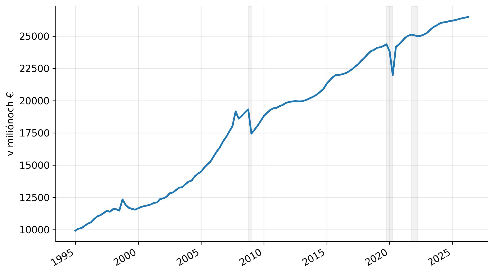
Obr. 13.1 Reálny HDP v slovenskej ekonomike#
Zdroj: vlastné spracovanie na základe údajov Eurostatu.
Ale, až keď zobrazíme prirodzený logaritmus HDP, (Obr. 13.2) získame presnejší obraz.
V oboch obrázkoch sú sivými zónami vyznačené recesie, ktoré si ešte predstavíme neskôr(Recesie v slovenskej ekonomike). Recesie predstavujú obdobia poklesu ekonomickej aktivity medzi vrcholom a dnom hospodárskeho cyklu. Z Obr. 13.2 je na prvý pohľad vidieť, že niektoré z recesií zmenili tempo rastu HDP.
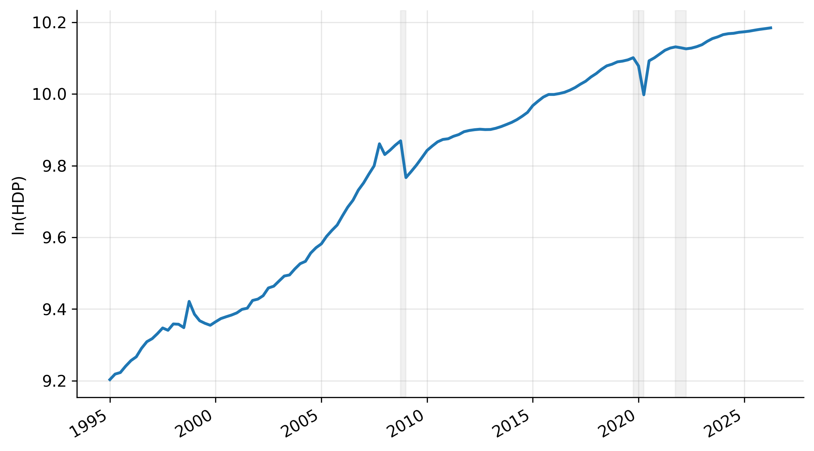
Obr. 13.2 Reálny HDP v slovenskej ekonomike#
Zdroj: vlastné spracovanie na základe údajov Eurostatu.
Z Obr. 13.2 možno usúdiť, že po finančnej kríze sa priemerné tempo rastu slovenského HDP znížilo. Zdá sa tiež, že po pandémii COVID-19 zostalo tempo rastu nižšie než v období pred globálnou finančnou krízou.
13.5. Nominálny HDP#
Vráťme sa k výpočtu HDP (pozri Systémy národných účtov a makroekonomická rovnováha). Uviedli sme, že HDP je vyjadrený v peňažných jednotkách, resp. nominálne. Matematicky môžeme výdavkovú metódu výpočtu HDP zapísať v tvare:
kde \(PY\) je HDP,
sú množstvá všetkých (\(k\)) nakúpených nových domácich tovarov a služieb za jedno obdobie. Môžu to byť tovary a služby slúžiace domácnostiam, tovary a služby potrebné na zvýšenie alebo údržbu vstupu kapitálu, tovary a služby slúžiace vláde alebo tovary a služby, ktoré kúpi zvyšok sveta.
Tieto tovary a služby sú samozrejme vyjadrené v rôznych jednotkách. Ak ich chceme sčítať, potrebujeme ich vyjadriť v rovnakých jednotkách. Preto ich vynásobíme cenami, za aké boli skutočne (bežne) kúpené.
Nominálny HDP nazývame aj HDP v bežných cenách. Cenu prvého tovaru označujeme \(P_1\), druhého \(P_2\) atď.
Všimnite si
Všimnite si, že hodnota HDP závisí od dvoch faktorov: od množstva vyprodukovaných tovarov a služieb a od ich cien. Práve odlíšenie zmien množstiev od zmien cien bude hlavným cieľom nasledujúcich častí.
Slovenský HDP v bežných cenách je zobrazený na Obr. 13.3 oranžovou čiarou.
Ak zavedieme vektorové označenie, veľmi zjednodušíme ďalšie zápisy. Pre tento účel budeme vektorom \(\mathbf{y}\) označovať množstvá všetkých spotrebovaných tovarov a služieb vyjadrené v ich pôvodných jednotkách. Vektor \(\mathbf{p}\) je vektor ich cien. Jeho transpozícia je zapísaná v riadku:
Výpočet HDP v bežných cenách (13.9) možno rozpísať skalárnym súčinom
Jednoduchý vektorový zápis výpočtu (13.9) je v tvare
Podľa konvencie tejto učebnice, odlíšime vektory množstiev a cien v nasledujúcom období apostrofom \((\mathbf{p',y'})\). HDP v ďalšom období je
Vyjadrime mieru rastu nominálneho HDP:
kde \(g(PY)\) je diskrétne vyjadrenie miery rastu HDP. Táto hodnota nás informuje, ako sa v danom období zmenila peňažne vyjadrená výkonnosť ekonomiky. Problém je, že zmenu nominálneho HDP možno prisúdiť dvom zdrojom. Môže byť spôsobená zmenou vyprodukovaných množstiev \(\mathbf y\), ale aj zmenou cien \(\mathbf p\), teda zmenou všeobecnej cenovej hladiny.
Preto veličina \(g(PY)\) vyjadruje mieru rastu nominálneho HDP, pričom sama osebe neumožňuje určiť, aká časť rastu bola spôsobená rastom produkcie a aká rastom cien.
13.6. Reálny HDP#
Zaujíma nás, ako narástol reálny HDP (\(Y\)).
Problém môžeme vyriešiť tak, že HDP v oboch obdobiach vypočítame v stálych cenách. Vezmime prvé obdobie za bázické, t. j. HDP vypočítame s využitím cien prvého obdobia. Reálny hrubý domáci produkt v cenách prvého obdobia v prvom období bude \(\mathbf{p}^\top\mathbf{y}\) (13.10) a v druhom \(\mathbf{p}^\top\mathbf{y'}\).
Získame tak mieru rastu reálneho HDP s prvým bázickým obdobím
K inému výsledku sa dopracujeme, ak vezmeme za bázické obdobie druhé. Reálny HDP s druhým bázickým obdobím je
Porovnaním (13.12) a (13.13) zistíme, že vo všeobecnosti nie sú rovnaké. Dôvodom je zmena relatívnych cien v čase. Pri použití cien prvého obdobia býva miera rastu reálneho HDP spravidla vyššia než pri použití cien druhého obdobia. Voľba bázického obdobia preto ovplyvňuje odhad reálneho rastu ekonomiky.
Pri výpočte reálneho HDP je problém voľby bázického obdobia. Súčasné národné účty tento problém riešia pomocou reťazených objemových indexov. Namiesto použitia cien jediného bázického obdobia sa zmeny objemu vypočítavajú s využitím cien susedných období a následne sa navzájom reťazia. Tento postup budeme ďalej označovať jednoduchšie ako reťazenie objemov.
- Výpočet reálneho HDP reťazením objemov
Reálny HDP vypočítaný reťazením objemov vzniká spájaním objemových zmien medzi susednými obdobiami do jedného časového radu [EuropeanCommission13].
V našom príklade s dvoma obdobiami použijeme Fisherov objemový index, teda geometrický priemer objemových indexov vypočítaných s cenami prvého a druhého obdobia.
Miera rastu reálneho HDP je preto geometrickým priemerom oboch hrubých mier rastu reálneho HDP:
V moderných národných účtoch sa takto vypočítané medziročné zmeny následne reťazia, čím vzniká časový rad reálneho HDP. Geometrický priemer mier rastu (13.12) a (13.13) sa nazýva Fisherov objemový index.
Poznámka
Reálny HDP vypočítaný v cenách prvého obdobia zodpovedá Laspeyresovmu objemovému indexu. Reálny HDP vypočítaný v cenách druhého obdobia zodpovedá Paascheho objemovému indexu. Geometrický priemer oboch mier rastu sa nazýva Fisherov objemový index.
Reálny HDP vypočítame reťazením objemov.
Pri voľbe prvého bázického obdobia, reálny HDP v prvom období sa rovná nominálnemu HDP:
Reálny HDP v druhom období s prvým bázickým obdobím vypočítaný reťazením objemov je:
Ak za bázické zvolíme druhé obdobie, reálny HDP v druhom období sa rovná nominálnemu HDP:
Analogicky reálny HDP v prvom období s druhým bázickým obdobvím vypočítaný reťazením objemov je:
To znamená, že HDP prvého obdobia vyjadrený s druhým bázickým obdobím získame „odstránením“ reálneho rastu z HDP druhého obdobia.
Takýmto spôsobom môžeme počítať reálny rast nielen HDP, ale aj ľubovoľného agregátu zo systému národných účtov. Rovnaký princíp sa používa napríklad pri výpočte reálnej spotreby domácností, reálnych investícií, reálnych vládnych nákupov alebo reálneho dovozu a vývozu.
Na Obr. 13.3 je zobrazený štvrťročný sezónne očistený (Sezónne očistený časový rad) reálny a nominálny HDP v slovenskej ekonomike. Obidva časové rady sme získali z oficiálnej databázy Eurostat. Nominálny HDP je vypočítaný v bežných cenách. Reálny HDP je vypočítaný reťazením objemov a vyjadrený s bázickým obdobím v roku 2020. Preto v bázickom období musí byť reálny HDP rovnako veľký ako nominálny (\(\mathbf{p}^\top_{2020} \mathbf{y}_{2020}\)).
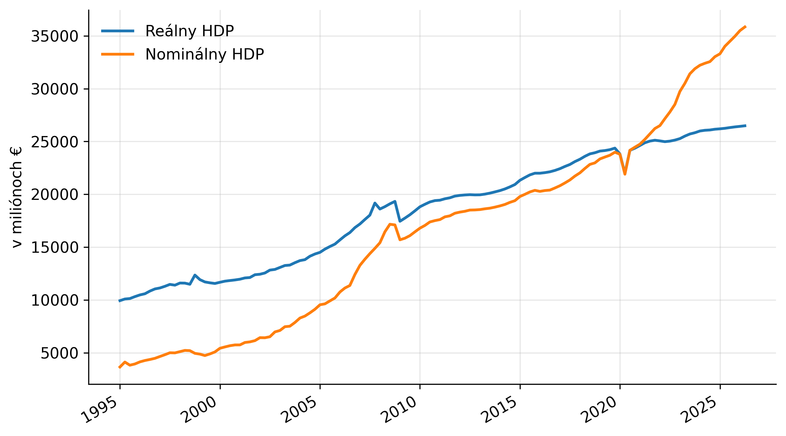
Obr. 13.3 Reálny a nominálny HDP v slovenskej ekonomike#
Zdroj: vlastné spracovanie na základe údajov Eurostatu.
Rast nominálneho HDP odráža nielen rast objemu produkcie v ekonomike, ale aj rast cenovej hladiny.
Od prvého štvrťroku 2000 po obdobie posledného pozorovania (druhý štvrťrok 2026 v čase písania tejto kapitoly) sa nominálny HDP zvýšil takmer 6,61 násobne.
To predstavuje spojitý priemerný ročný rast
v hodnote približne 7,2 %, kde \(T\) je počet pozorovaní, avšak počet zmien HDP je o jednu menej, \(T-1\). Dolný index HDP označeného symbolom \(Y\) označuje krajinu (SK) a obdobie. Napríklad, 1995Q1 znamená prvý štvrťrok 1995.
Reálny HDP v rovnakom období narástol približne 2,27 násobne, čo predstavuje spojitý priemerný ročný rast približne 3,12 %.
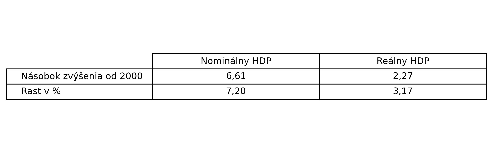
Obr. 13.4 Rast reálneho a nominálneho HDP v slovenskej ekonomike#
Zdroj: vlastné spracovanie na základe údajov Eurostatu.
Rozdiel medzi nominálnym a reálnym rastom HDP ukazuje, že významná časť rastu peňažnej hodnoty produkcie bola spôsobená rastom cien. Kým nominálny HDP rástol priemerným tempom 7,31 % ročne, reálny HDP rástol iba tempom 3,14 % ročne.
13.7. Deflátory#
Uviedli sme, že rast nominálneho HDP môžeme pripísať rastu reálneho HDP a rastu cien. Ak sme dokázali vypočítať rast reálneho HDP, nie je problém dopočítať rast cien. Táto informácia je rovnako predmetom záujmu ekonómov.
- Deflátor
Deflátor ľubovoľnej premennej \(X\) definujeme ako podiel jej nominálnej a reálnej hodnoty vynásobený číslom 100:
Ak zvolíme bázické prvé obdobie, v prvom období sa reálny aj nominálny HDP rovnajú (13.15) a deflátor HDP (13.19) sa v prvom období rovná 100.
Ak do výpočtu deflátora (13.19) dosadíme reálny HDP v druhom období vypočítaný reťazením objemov s prvým bázickým obdobím (13.16) a nominálny HDP (13.11), získame
Ak zvolíme bázické druhé obdobie, do výpočtu deflátora (13.19) dosadíme reálny HDP v prvom období vypočítaný reťazením objemov s druhým bázickým obdobím (13.18) a nominálny HDP v cenách v prvom období(13.10) a získame
Pri druhom bázickom období sa reálny a nominálny HDP rovnajú (13.17) a deflátor HDP (13.19) sa v druhom období rovná 100.
Obdobie |
Bázické obdobie 1 |
Bázické obdobie 2 |
|---|---|---|
Obdobie 1 |
100 |
\(100\frac{\mathbf p^\top\mathbf y}{Y^{(2)}}\) |
Obdobie 2 |
\(100\frac{\mathbf p'^\top\mathbf y'}{Y'^{(1)}}\) |
100 |
Sezónne očistený štvrťročný časový rad deflátora HDP v slovenskej ekonomike je zobrazený na Obr. 13.5. Časový rad sme získali podielom nominálneho a reálneho HDP (Obr. 13.3).
Recesie sú zobrazené sivými zónami (pozri Tab. 13.1).
Bázickým obdobím je rok 2020, v ktorom sa deflátor rovná 100. Keďže cenová hladina v dlhom období rástla, hodnoty deflátora pred rokom 2020 sú nižšie ako 100, zatiaľ čo po roku 2020 sú vyššie ako 100.
Môžeme si všimnúť, že ceny rástli pomerne rýchlo v období pred globálnou finančnou krízou v roku 2008. Nasledovalo obdobie nízkeho rastu cien. V rokoch 2014 až 2016 dokonca všeobecná cenová hladina mierne klesala.
Po recesii spojenej s pandémiou COVID-19 začali ceny opäť výraznejšie rásť. Rast cien sa ešte zvýraznil počas energetickej krízy spojenej s recesiou v roku 2022.
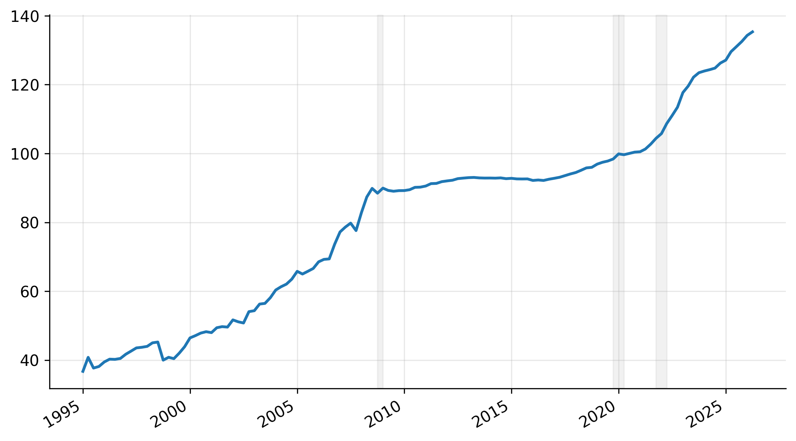
Obr. 13.5 Deflátor HDP v slovenskej ekonomike#
Zdroj: vlastné spracovanie na základe údajov Eurostatu.
13.8. Cenové indexy#
Deflátory HDP alebo ďalších zložiek národných účtov patria medzi cenové indexy. Ich úlohou je merať vývoj všeobecnej cenovej hladiny v ekonomike.
Okrem nich poznáme aj ďalšie cenové indexy, napríklad index spotrebiteľských cien alebo index cien priemyselných výrobcov. Jednotlivé indexy sa od seba odlišujú najmä tým, ktoré tovary a služby zahŕňajú a aké váhy používajú pri výpočte.
Pri indexe spotrebiteľských cien je základným súborom spotrebný kôš domácností. Obsahuje tovary a služby, ktoré typicky nakupujú domácnosti na svoju spotrebu. Na Slovensku sa podľa metodiky Európskej únie na meranie spotrebiteľskej inflácie používa harmonizovaný index spotrebiteľských cien (Harmonised Index of Consumer Prices, HICP). Spotrebný kôš a jeho váhy sa pravidelne aktualizujú, aby zodpovedali meniacim sa spotrebným zvyklostiam domácností.
Jednotlivé cenové indexy nemusia vykazovať rovnaký vývoj. Deflátor HDP zahŕňa ceny všetkých finálnych domácich tovarov a služieb, zatiaľ čo HICP meria ceny spotrebného koša domácností.
Ďalším významným cenovým indexom je index cien priemyselných výrobcov (Producer Price Index, PPI). Tento index meria ceny, za ktoré domáci výrobcovia predávajú svoju produkciu. Na rozdiel od HICP sleduje ceny na úrovni výroby, nie ceny platené konečnými spotrebiteľmi. Zmeny výrobných cien sa môžu následne premietať do spotrebiteľských cien.
Poznámka
Pri výpočte reálneho HDP sa používajú reťazené objemové indexy založené na Fisherovom prístupe. Naopak, harmonizovaný index spotrebiteľských cien (HICP) vychádza zo spotrebného koša domácností a používa reťazené cenové indexy založené na Laspeyresovej metodike.
Sezónne očistený (Sezónne očistený časový rad) mesačný časový rad harmonizovaného indexu spotrebiteľských cien (HICP) v slovenskej ekonomike je zobrazený na Obr. 13.6. Časový rad sme získali z databázy Eurostat. Bázickým obdobím je rok 2025.
Recesie sú zobrazené sivými zónami (pozri Tab. 13.1).
Priebeh HICP potvrdzuje závery odvodené z vývoja deflátora HDP na Obr. 13.5. Ceny rástli pomerne rýchlo v období pred globálnou finančnou krízou v roku 2008. Následne sa rast cien spomalil. HICP tiež potvrdzuje obdobie veľmi nízkej inflácie a miestami aj poklesu cien v rokoch 2014 až 2016. Po pandémii COVID-19 začali ceny opäť rásť výrazne rýchlejšie. Rast cien sa ešte viac zvýraznil počas energetickej krízy spojenej s rastom cien energií po roku 2021.
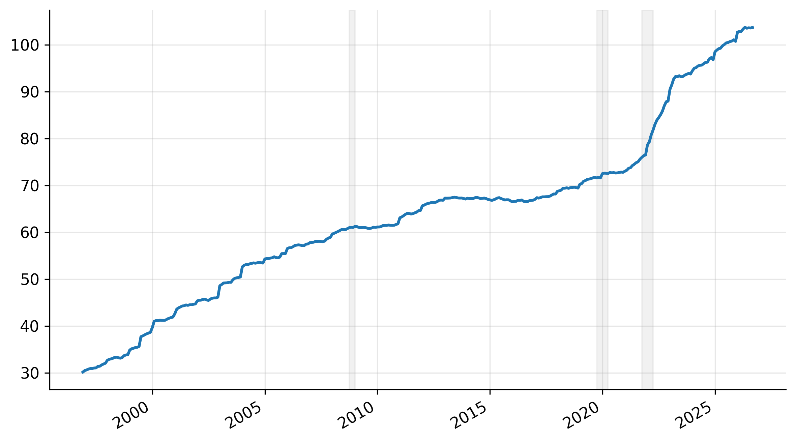
Obr. 13.6 Harmonizovaný index spotrebiteľských cien (HICP) v slovenskej ekonomike#
Zdroj: vlastné spracovanie na základe údajov Eurostatu.
13.9. Miera inflácie#
- Miera inflácie
Miera inflácie je miera rastu všeobecnej cenovej hladiny.
Za všeobecnú cenovú hladinu možno dosadiť ľubovoľný cenový index. Ak je \(P\) ľubovoľný cenový index, miera inflácie je
Pri spojitom vyjadrení platí
V závislosti od použitého cenového indexu môžeme hovoriť napríklad o inflácii meranej deflátorom HDP, harmonizovaným indexom spotrebiteľských cien (HICP) alebo indexom cien priemyselných výrobcov (PPI).
Na Obr. 13.7 je zobrazená miera inflácie meraná deflátorom HDP a harmonizovaným indexom spotrebiteľských cien (HICP). Údaje začínajú v prvom štvrťroku 1998.
Štvrťročné údaje miery inflácie sme získali spojitým vyjadrením (13.23), pričom za \(P\) sme dosadili deflátor HDP (Obr. 13.5) a HICP (Obr. 13.6).
Z mesačných údajov HICP sme štvrťročné údaje získali priemerovaním.
Recesie sú zobrazené sivými zónami (pozri Tab. 13.1).
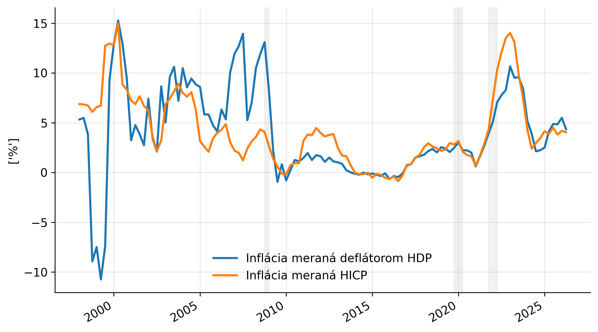
Obr. 13.7 Miera inflácie na Slovensku#
Zdroj: vlastné spracovanie na základe údajov Eurostatu.
Miera inflácie meraná deflátorom HDP a harmonizovaným indexom spotrebiteľských cien (HICP) vykazuje podobný dlhodobý vývoj, avšak v niektorých obdobiach sa môže významne líšiť. Dôvodom je, že jednotlivé indexy pokrývajú rozdielne súbory tovarov a služieb.
Deflátor HDP zahŕňa ceny všetkých finálnych domácich tovarov a služieb vyprodukovaných v ekonomike, zatiaľ čo HICP sleduje ceny spotrebného koša domácností. Preto poskytujú odlišný pohľad na vývoj cenovej hladiny.
Z Obr. 13.7 vidíme, že inflácia meraná deflátorom HDP a harmonizovaným indexom spotrebiteľských cien (HICP) vykazuje podobný dlhodobý vývoj. Najmä po roku 2010 sa obe miery inflácie pohybujú veľmi blízko pri sebe, čo naznačuje, že cenové zmeny v spotrebnom koši domácností a v domácej produkcii boli v tomto období podobné.
V prvej polovici 2000-tych rokov je inflácia meraná deflátorom HDP volatilnejšia než inflácia meraná HICP. Dôvodom môže byť skutočnosť, že deflátor HDP zahŕňa ceny všetkých finálnych domácich tovarov a služieb, zatiaľ čo HICP sleduje iba ceny spotrebného koša domácností.
Pred globálnou finančnou krízou v roku 2008 boli inflačné tlaky výrazné a inflácia dosahovala vysoké hodnoty. Počas finančnej krízy sa rast cien prudko spomalil a obe miery inflácie sa krátkodobo priblížili k nule.
V rokoch 2014 až 2016 možno pozorovať obdobie veľmi nízkej inflácie až miernej deflácie. Toto obdobie sa skončilo postupným návratom inflácie ku kladným hodnotám.
Po pandémii COVID-19 sa inflácia opäť výrazne zvýšila. Najvyššie hodnoty dosiahla počas energetickej krízy v rokoch 2022 a 2023. Inflácia meraná HICP v tomto období prevyšovala infláciu meranú deflátorom HDP, čo naznačuje, že rast cien energií a ďalších položiek spotrebného koša zasiahol domácnosti silnejšie než priemerné ceny produkcie zahrnutej do HDP.
- Deflácia
Deflácia je pokles všeobecnej cenovej hladiny. Deflácia nastáva, ak je miera inflácie záporná.
Na Slovensku možno obdobie deflácie pozorovať približne v rokoch 2014 až 2016. Cenové indexy v tomto období klesali, ako vidno z Obr. 13.5 a Obr. 13.6, a miera inflácie bola záporná, ako dokumentuje Obr. 13.7.
13.10. Parita kúpnej sily#
V predchádzajúcich častiach sme ukázali, že pri porovnávaní ekonomických veličín v čase nestačí pracovať s nominálnymi hodnotami. Rast nominálneho HDP môže byť spôsobený nielen rastom produkcie, ale aj rastom cien. Preto sme zaviedli reálny HDP, ktorý abstrahuje od zmien cenovej hladiny v čase.
Podobný problém vzniká aj pri porovnávaní ekonomík v priestore, teda medzi krajinami alebo regiónmi. Rovnaká peňažná suma umožňuje kúpiť rôzne množstvo tovarov a služieb v rôznych častiach sveta. Napríklad za 100 eur si spotrebiteľ kúpi iný objem tovarov a služieb na Slovensku než v Nemecku alebo vo Švajčiarsku.
Pri porovnávaní životnej úrovne a ekonomickej výkonnosti preto nestačí prepočítať ekonomické veličiny pomocou trhového výmenného kurzu. Potrebujeme zohľadniť aj rozdiely v cenových hladinách jednotlivých krajín.
Zároveň platí, že pri porovnávaní ekonomickej výkonnosti krajín nás zvyčajne zaujíma produkcia pripadajúca na jedného obyvateľa. Preto sa HDP spravidla prepočítava na obyvateľa.
Na zohľadnenie rozdielov v cenových hladinách medzi krajinami sa používa prepočet pomocou parity kúpnej sily (Purchasing Power Parity, PPP). Pri tomto prístupe sa ekonomické veličiny prepočítajú do spoločnej cenovej hladiny, takže ich možno navzájom porovnávať bez skreslenia spôsobeného rozdielnymi cenami.
Parita kúpnej sily tak plní podobnú úlohu v priestore, akú plní reálny HDP v čase. Reálny HDP odstraňuje rozdiely v cenách medzi obdobiami, zatiaľ čo prepočet pomocou parity kúpnej sily odstraňuje rozdiely v cenách medzi krajinami.
Na Obr. 13.8 je zobrazený index HDP na obyvateľa prepočítaného paritou kúpnej sily (PPP) na Slovensku, v Nemecku a v Rakúsku. Bázickým regiónom je Európska únia (EÚ). Ročné údaje pochádzajú z databázy Eurostat. Slovenské recesie sú zobrazené sivými zónami (pozri Tab. 13.1).
HDP na obyvateľa v EÚ je v každom období normalizovaný na hodnotu 100. Ak je hodnota indexu na Slovensku v roku 2000 približne 51, znamená to, že HDP na obyvateľa prepočítaný paritou kúpnej sily dosahoval približne 51 % priemernej úrovne EÚ.
V roku 2010 táto hodnota dosahovala približne 75. Slovensko sa v období rokov 2000 až 2010 výrazne približovalo priemernej úrovni ekonomickej výkonnosti Európskej únie. Index HDP na obyvateľa prepočítaný paritou kúpnej sily vzrástol z približne 51 % priemeru EÚ v roku 2000 na približne 76 % v roku 2025.
Po roku 2010 sa proces približovania výrazne spomalil. Slovenský HDP na obyvateľa sa následne pohyboval približne medzi 70 % a 80 % priemeru EÚ a do roku 2025 nedošlo k ďalšiemu významnému približovaniu.
Toto pozorovanie je v súlade s vývojom prirodzeného logaritmu reálneho HDP na Obr. 13.2, podľa ktorého sa tempo rastu slovenskej ekonomiky po finančnej kríze postupne spomaľovalo.
Pre ilustráciu obrázok zobrazuje aj indexy HDP na obyvateľa prepočítané paritou kúpnej sily v Nemecku a Rakúsku. Na začiatku sledovaného obdobia dosahovali obe krajiny výrazne vyššiu úroveň HDP na obyvateľa než priemer EÚ. V priebehu času sa však ich náskok voči priemeru EÚ zmenšoval.
Z obrázka možno usudzovať, že obdobie globálnej finančnej krízy bolo pre slovenskú ekonomiku spojené s výraznejším zhoršením relatívnej výkonnosti než v prípade Rakúska, Nemecka alebo priemeru Európskej únie. Naopak, počas pandémie COVID-19 sa relatívna pozícia Slovenska voči priemeru EÚ mierne zlepšila.
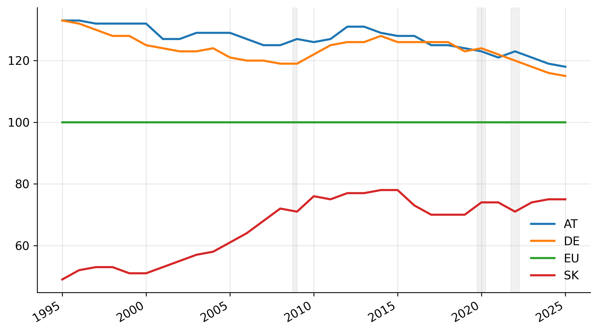
Obr. 13.8 Index HDP na obyvateľa v Rakúsku, Nemecku a na Slovensku vypočítaného paritou kúpnej sily s bázickým regiónom EÚ#
Zdroj: vlastné spracovanie na základe údajov Eurostatu.
Poznámka
Ukazovatele HDP na obyvateľa prepočítané paritou kúpnej sily patria medzi najpoužívanejšie miery ekonomickej výkonnosti krajín. Ich výpočet je však metodicky náročný a výsledky môžu byť citlivé na odhady cenových hladín, najmä v oblasti bývania a služieb. Preto sa metodika výpočtu PPP pravidelne spresňuje.
13.11. Hospodárske cykly#
Uvedieme dva prístupy k meraniu hospodárskych cyklov. Prvý vychádza z Burnsovej a Mitchellovej definície cyklu založenej na identifikácii vrcholov a dien ekonomickej aktivity. Druhý vychádza z rozkladu časových radov na trendovú a cyklickú zložku, pričom cyklické charakteristiky získame analýzou cyklickej zložky.
- Burnsova a Mitchellova definícia cyklu
Hospodársky cyklus je sled expanzií a recesií hospodárskej aktivity. Expanzia trvá od dna k nasledujúcemu vrcholu cyklu. Recesia trvá od vrcholu k nasledujúcemu dnu.
Pre naše účely nasledujme vrcholy, dná a cykly nasledovne:
- Vrchol hospodárskeho cyklu
Vrchol hospodárskeho cyklu je štvrťrok, v ktorom je reálny HDP vyšší než v dvoch predchádzajúcich a dvoch nasledujúcich štvrťrokoch.
Technická poznámka
Pri identifikácii hospodárskych cyklov sa môže stať, že medzi dvoma dnami identifikujeme viac lokálnych vrcholov. V takom prípade za vrchol hospodárskeho cyklu považujeme posledný vrchol pred nasledujúcim dnom.
- Dno hospodárskeho cyklu
Dno hospodárskeho cyklu je štvrťrok, v ktorom je reálny HDP nižší než v dvoch predchádzajúcich a dvoch nasledujúcich štvrťrokoch.
- Recesia
Obdobie od vrcholu hospodárskeho cyklu k nasledujúcemu dnu.
- Expanzia
Obdobie od dna hospodárskeho cyklu k nasledujúcemu vrcholu.
- Hospodársky cyklus
Hospodársky cyklus je obdobie medzi dvoma po sebe nasledujúcimi vrcholmi hospodárskej aktivity.
Hospodársky cyklus má pravidelnosť v zmysle, že dná striedajú vrcholy, ale je nepravidelný v tom zmysle, že amplitúdy hospodárskych cyklov nie sú rovnako intenzívne a dlhé.
13.11.1. Recesie v slovenskej ekonomike#
Druhá polovica 90. rokov predstavovala v slovenskej ekonomike obdobie zásadných ekonomických a inštitucionálnych zmien, preto pri identifikácii slovenských hospodárskych cyklov využijeme reálny HDP od prvého štvrťroku 2000.
S využitím údajov slovenského reálneho HDP a podľa definícií Vrchol hospodárskeho cyklu a Dno hospodárskeho cyklu možno v slovenských údajoch (Obr. 13.1) po roku 2000 identifikovať tri významné recesie spojené s globálnou finančnou krízou, pandémiou COVID-19 a energetickou krízou.
Recesia |
Vrchol |
Dno |
|---|---|---|
Globálna finančná kríza |
2008Q4 |
2009Q1 |
Pandémia COVID-19 |
2019Q4 |
2020Q2 |
Energetická kríza |
2021Q4 |
2022Q2 |
Zdroj: vlastné spracovanie na základe údajov Eurostatu.
Prvá je recesia od štvrtého štvrťroku 2008 po prvý štvrťrok 2009. Bola spôsobená zlyhaním hypotekárneho trhu v USA v roku 2008. Touto finančnou krízou sme sa zaoberali v kapitole Model prídelovej ekonomiky a nedokonalosti na finančných trhoch. Krízu spôsobilo podcenenie rizika nesplatenia hypoték a pokles cien nehnuteľností.
Druhú recesiu spôsobila pandémia COVID-19. Počas pandémie sa rýchlo šírilo infekčné ochorenie a vlády v mnohých krajinách prijímali opatrenia obmedzujúce spoločenský kontakt. V dôsledku toho poklesla ponuka práce aj ekonomická aktivita.
Tretia recesia bola spojená s energetickou krízou v Európe v rokoch 2021 a 2022.
Napriek tomu, že mnohé z udalostí, ktoré recesie vyvolali, vznikli v zahraničí, zasiahli aj Slovensko. Slovensko je malá otvorená ekonomika. Vývoz a dovoz sú na Slovensku významnou súčasťou ekonomickej aktivity. Preto je Slovensko závislé na globálnej ekonomike. Ak napríklad zdražie ropa, ktorú dovážame, zasiahne to domácich spotrebiteľov aj firmy. Ak klesne spotreba v USA, zasiahne to domácich vývozcov.
Vo väčšine grafov zobrazujúcich slovenské časové rady v tejto kapitole sú recesie vyznačené sivými zónami. Ide o obdobia uvedené v Tab. 13.1.
Zaujímavé je, že všetky tri identifikované recesie možno spojiť s udalosťami, ktoré vznikli mimo Slovenska.
13.12. Cyklické charakteristiky#
Ďalšie informácie o hospodárskych cykloch získame rozkladom časových radov na ich jednotlivé zložky. Ekonomické časové rady spravidla obsahujú:
sezónnu zložku,
trendovú zložku,
cyklickú zložku,
náhodnú zložku.
13.12.1. Sezónna zložka#
Pri časových radoch s vyššou frekvenciou, napríklad pri štvrťročných alebo mesačných údajoch, bývajú krátkodobé výkyvy často spôsobené sezónnymi vplyvmi. Niektoré tovary a služby sa spotrebúvajú viac v určitých obdobiach roka, sezónne sa mení ponuka práce a mnohé odvetvia dosahujú pravidelne vyššie alebo nižšie tržby. Napríklad v letných mesiacoch býva lacnejšia zelenina a ovocie, po skončení školského roka vstupuje na trh práce viac brigádnikov a ku koncu roka býva spotreba domácností spravidla vyššia.
Na Obr. 13.9 je zobrazený reálny HDP Slovenska od prvého štvrťroka 1995 pred a po sezónnom očistení. Údaje sme získali z Eurostatu. Sezónne neočistený časový rad je zobrazený modrou čiarou. Vidíme, že HDP dosahuje pravidelne najvyššie hodnoty v treťom štvrťroku, o niečo nižšie vo štvrtom štvrťroku a najnižšie v prvom štvrťroku. Tento pravidelne sa opakujúci vzorec predstavuje sezónnu zložku časového radu.
- Sezónne očistený časový rad
Sezónne očistený časový rad je časový rad upravený tak, aby neobsahoval pravidelne sa opakujúce sezónne vplyvy. Vďaka tomu umožňuje lepšie sledovať dlhodobý trend a hospodárske cykly.
Aby bolo možné jednoduchšie sledovať dlhodobejší vývoj ekonomiky, štatistické úrady zvyknú zverejňovať aj sezónne očistené údaje. Pri sezónnom očistení sa odhadne a odstráni pravidelne sa opakujúca sezónna zložka, čím sa zvýraznia trendové a cyklické pohyby ekonomiky. Na tento účel sa používajú štatistické metódy založené najmä na kĺzavých priemeroch a ďalších filtroch.
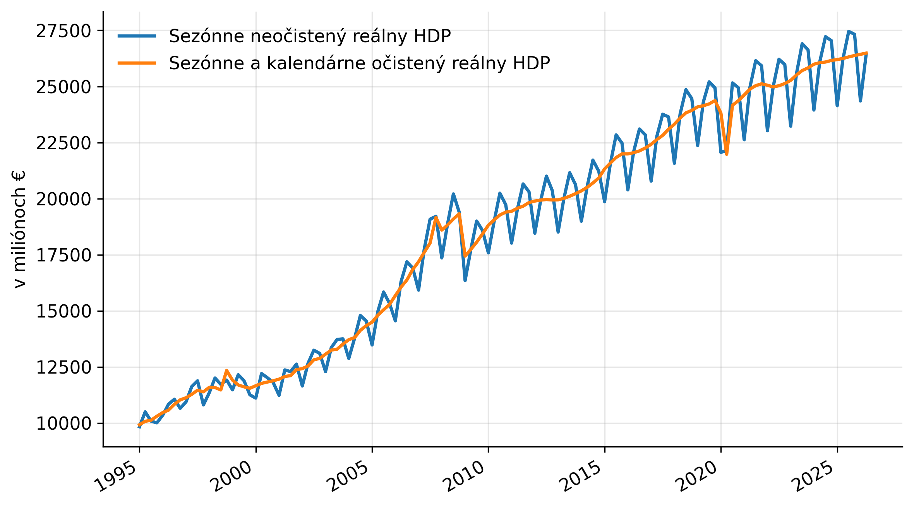
Obr. 13.9 Sezónne neočistený a sezónne očistený reálny HDP v slovenskej ekonomike#
Zdroj: vlastné spracovanie na základe údajov Eurostatu.
Pre naše účely budeme pri časových radoch s vyššou frekvenciou používať sezónne očistené údaje. Ak nie je uvedené inak, všetky štvrťročné a mesačné časové rady v tejto učebnici sú sezónne očistené.
Sezónne očistený časový rad reálneho HDP zobrazený oranžovou čiarou je totožný s časovým radom reálneho HDP na Obr. 13.1.
13.12.2. Trendová a cyklická zložka#
Trend ekonomickej premennej vyjadruje jej dlhodobý vývoj. Ekonomické premenné sa však v čase nepohybujú presne po svojom trende, ale okolo neho fluktuujú.
Časť týchto fluktuácií možno vysvetliť sezónnymi vplyvmi. Zostávajúce odchýlky od trendu sa často pripisujú hospodárskemu cyklu.
Okrem identifikácie vrcholov a dien hospodárskeho cyklu možno hospodársky cyklus vyjadriť aj prostredníctvom cyklickej zložky časového radu reálneho HDP. Cyklická zložka meria odchýlku ekonomickej aktivity od jej dlhodobého trendu.
Pri odhade trendovej zložky časového radu možno použiť viacero metód. V literatúre sa často využívajú lineárne a polynomiálne trendové regresie, Hodrickov-Prescottov filter, Hamiltonov filter alebo frekvenčné filtre [BK99, Ham18, HP97].
V tejto učebnici budeme trend ekonomickej aktivity odhadovať pomocou log-kvadratického trendu. Tento prístup je jednoduchý, transparentný a pri štúdiu základných cyklických charakteristík poskytuje výsledky podobné alternatívnym metódam [USG17]. Cyklickú zložku následne získame ako rozdiel medzi pozorovanou hodnotou logaritmu HDP a jeho odhadnutým trendom.
V regresnom modeli log-kvadratického trendu odhadnutého metódou najmenších štvorcov
je \(y_t\) hodnota skúmaného časového radu v období \(t\), \(\hat{\beta}_0\), \(\hat{\beta}_1\) a \(\hat{\beta}_2\) sú odhadnuté parametre modelu, \(t\) je časový trend a reziduál
je cyklická zložka, pričom \(\hat{y}_t\) označuje vyrovnané hodnoty trendu.
Výhodou takto odhadnutej cyklickej zložky je, že je vyjadrená ako rozdiel logaritmov. Preto ju možno interpretovať ako približnú percentuálnu odchýlku časového radu od jeho dlhodobého trendu. Po vynásobení hodnotou 100 získame cyklickú zložku vyjadrenú v percentách.
Poznámka
Pri premenných, ktoré môžu nadobúdať nulové alebo záporné hodnoty, napríklad pri miere inflácie, používame analogický kvadratický trend bez logaritmickej transformácie v tvare
13.12.3. Trendová a cyklická zložka v slovenskej ekonomike#
Trendové zložky časových radov sme odhadli na celej dostupnej vzorke. Pri interpretácii hospodárskych cyklov sa však zameriame na obdobie po roku 2000, keďže druhá polovica 90. rokov bola spojená s výraznými štrukturálnymi zmenami slovenskej ekonomiky.
Na Obr. 13.10 je zobrazený reálny HDP Slovenska a jeho trendová zložka od prvého štvrťroku 2000.
Z Obr. 13.2 a Obr. 13.8 sme usúdili, že tempo rastu slovenského reálneho HDP sa v danom období spomaľuje. Obr. 13.10 je s touto hypotézou v súlade. Pri detailnejšom pohľade na trendovú zložku vidíme, že je mierne konkávna. Odhad parametra \(\hat{\beta}_2\) je záporný, čo naznačuje postupné spomaľovanie dlhodobého tempa rastu slovenskej ekonomiky.
Podľa obrázka je vrchol pred recesiou vyvolanou globálnou finančnou krízou výrazne vyšší, než predpovedá dlhodobý trend. Následná recesia spôsobila návrat reálneho HDP smerom k trendu.
Odlišnú situáciu možno pozorovať počas pandémie COVID-19. Dno tejto recesie sa nachádza výrazne pod trendom a následné oživenie vracia reálny HDP späť k jeho dlhodobému trendu.
Po energetickej kríze sa slovenský reálny HDP postupne vrátil k trendu, v súčasnosti sa však opäť nachádza mierne pod ním.
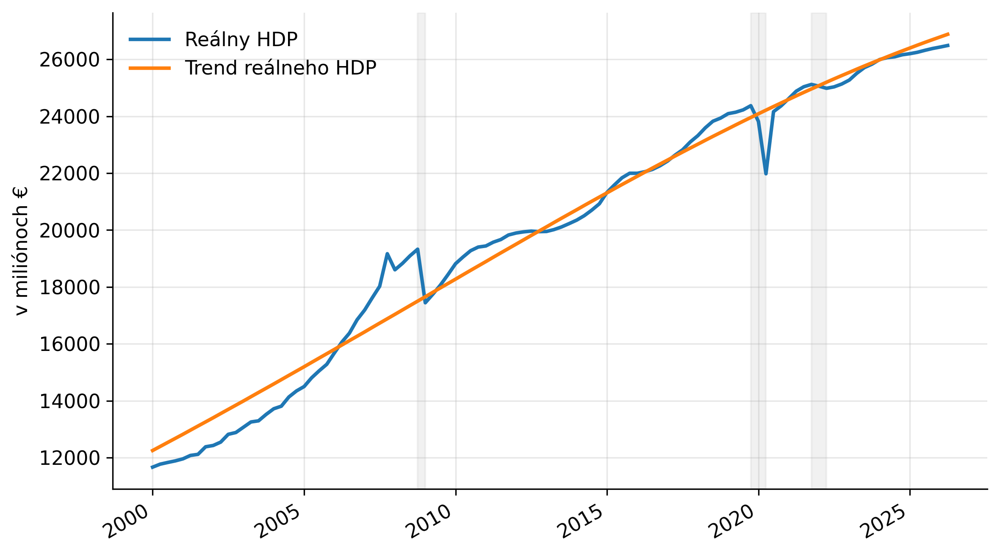
Obr. 13.10 Reálny HDP a jeho trendová zložka v slovenskej ekonomike#
Zdroj: vlastné spracovanie na základe údajov Eurostatu.
Na Obr. 13.11 je zobrazená cyklická zložka slovenského reálneho HDP. Z grafu možno vyčísliť odchýlky ekonomickej aktivity od jej dlhodobého trendu počas najvýznamnejších hospodárskych udalostí.
Vrchol pred globálnou finančnou krízou sa nachádzal približne 10 % nad dlhodobým trendom. Naopak, dno po vypuknutí pandémie COVID-19 bolo takmer 10 % pod dlhodobým trendom.
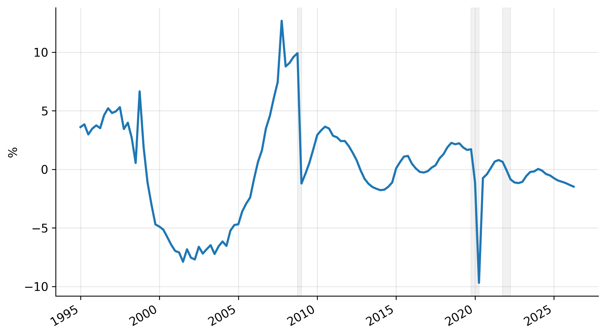
Obr. 13.11 Cyklická zložka reálneho HDP v slovenskej ekonomike.#
Zdroj: vlastné spracovanie na základe údajov Eurostatu.
Pred globálnou finančnou krízou sa ekonomická aktivita nachádzala výrazne nad svojím dlhodobým trendom. Ako sme uviedli v kapitole Model prídelovej ekonomiky a nedokonalosti na finančných trhoch, v Spojených štátoch amerických v tom období rástlo zadlženie domácností, zvyšovali sa ceny nehnuteľností a finančné inštitúcie podceňovali riziko nesplácania hypoték.
Po prehodnotení rizík (Pokles podielu bonitných dlžníkov) a poklese cien nehnuteľností (Pokles cien nehnuteľností) sa spotreba a investície prudko znížili. Keďže Slovensko je malá otvorená ekonomika, pokles dopytu v zahraničí sa prejavil aj poklesom dopytu po slovenskej produkcii. Prostredníctvom zahraničného obchodu sa preto globálna finančná kríza premietla do poklesu slovenského reálneho HDP a návratu ekonomickej aktivity k dlhodobému trendu.
Pandémia COVID-19 mala odlišný charakter. Kým finančná kríza vznikla predovšetkým v dôsledku problémov finančného systému a následného poklesu agregátneho dopytu, pandémia predstavovala náhly negatívny šok na strane ponuky aj dopytu. Obmedzenia ekonomickej aktivity spôsobili, že reálny HDP krátkodobo klesol výrazne pod svoj dlhodobý trend.
13.12.4. Charakteristiky#
Charakteristiky cyklickej zložky ľubovoľného časového radu zisťujeme podľa jej vzťahu k cyklickej zložke reálneho HDP. Zaujíma nás najmä:
aká je volatilita cyklickej zložky v porovnaní s volatilitou cyklickej zložky HDP,
aká je jej súčasná korelácia s cyklickou zložkou HDP,
či sa jej pohyby objavujú skôr alebo neskôr než pohyby cyklickej zložky HDP.
- Volatilita cyklickej zložky
Volatilita vyjadruje veľkosť výkyvov danej premennej v hospodárskom cykle. Meriame ju štandardnou odchýlkou cyklickej zložky. Volatilitu často vyjadrujeme relatívne ako pomer štandardnej odchýlky danej premennej k štandardnej odchýlke cyklickej zložky reálneho HDP.
- Súčasná korelácia
Súčasná korelácia vyjadruje silu lineárnej závislosti medzi cyklickou zložkou danej premennej a cyklickou zložkou reálneho HDP. Meriame ju Pearsonovým korelačným koeficientom.
Podľa znamienka korelácie hovoríme, že premenná je
procyklická, ak je jej cyklická zložka pozitívne korelovaná s cyklickou zložkou reálneho HDP,
kontracyklická, ak je jej cyklická zložka negatívne korelovaná s cyklickou zložkou reálneho HDP,
acyklická, ak jej cyklická zložka nevykazuje koreláciu s cyklickou zložkou reálneho HDP.
Vo všeobecnosti platí:
koeficient korelácie blízky 1 znamená veľmi silnú procyklickosť,
koeficient korelácie blízky −1 znamená veľmi silnú kontracyklickosť,
koeficient korelácie blízky 0 znamená acyklickosť.
- Predstih a oneskorenie
Korelácia sa môže prejaviť aj s časovým posunom.
Premenná je
predbiehajúca (leading), ak sú jej súčasné hodnoty silnejšie korelované s budúcimi hodnotami cyklickej zložky HDP,
oneskorená (lagging), ak sú jej súčasné hodnoty silnejšie korelované s minulými hodnotami cyklickej zložky HDP,
súbežná (coincident), ak je najsilnejšia korelácia medzi cyklickou zložkou premennej a HDP pozorovaná bez časového posunu.
13.13. Recesie a rast v ekonomike Slovenska#
Rast a hospodársky cyklus predstavujú dva pohľady na ekonomický vývoj. Rast opisuje dlhodobý vývoj ekonomiky, zatiaľ čo hospodárske cykly zachytávajú krátkodobé odchýlky ekonomickej aktivity od jej dlhodobého trendu.
Makroekonomická teória túto skutočnosť reflektuje. Teória ekonomického rastu sa zaoberá dlhodobým vývojom ekonomiky, zatiaľ čo teória hospodárskych cyklov vysvetľuje krátkodobé fluktuácie ekonomickej aktivity.
Identifikovali sme tri významné recesie v slovenskej ekonomike (pozri Tab. 13.1), ktoré súvisia s globálnou finančnou krízou, pandémiou COVID-19 a energetickou krízou v Európe.
Z predchádzajúcej analýzy však vyplýva, že tieto recesie nepredstavujú iba krátkodobé výkyvy ekonomickej aktivity. Z Obr. 13.2, Obr. 13.8 a Obr. 13.10 možno usudzovať, že po globálnej finančnej kríze došlo k spomaleniu dlhodobého tempa rastu slovenskej ekonomiky. Trendová zložka reálneho HDP je konkávna a odhad parametra \(\hat{\beta}_2\) je záporný. Zároveň sa približne od roku 2010 výrazne spomalil proces dobiehania priemernej ekonomickej výkonnosti Európskej únie.
V tabuľke Obr. 13.12 je uvedená spojito vypočítaná priemerná ročná miera rastu (13.7) reálneho HDP na obyvateľa na Slovensku a v EÚ v troch obdobiach. Prvé obdobie zahŕňa roky pred globálnou finančnou krízou (2000Q1–2008Q2), druhé obdobie roky medzi finančnou krízou a pandémiou COVID-19 (2009Q3–2019Q4) a tretie obdobie obdobie po pandémii COVID-19 (2021Q1–2026Q2). Údaje reálneho HDP na obyvateľa pochádzajú z Eurostatu.
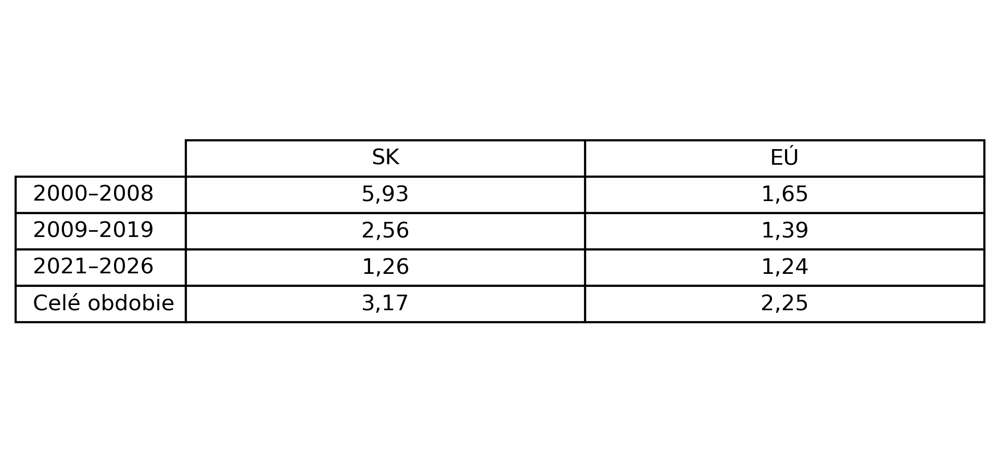
Obr. 13.12 Priemerné ročné tempo rastu reálneho HDP na obyvateľa na Slovensku a v EÚ (%) v troch obdobiach#
Zdroj: vlastné spracovanie na základe údajov Eurostatu.
Rovnaké výpočty po dekádach sú v Obr. 13.13
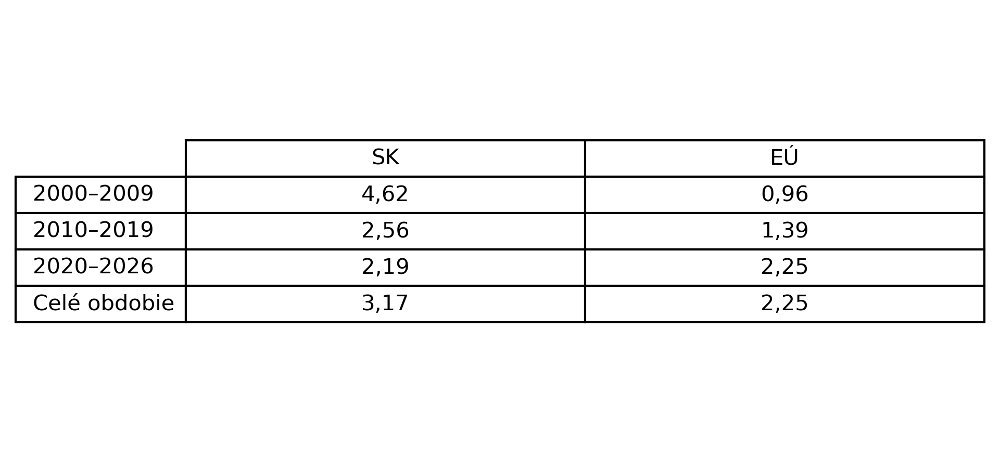
Obr. 13.13 Priemerné ročné tempo rastu reálneho HDP na obyvateľa na Slovensku a v EÚ (%) po dekádach#
Zdroj: vlastné spracovanie na základe údajov Eurostatu.
V období pred globálnou finančnou krízou rástla slovenská ekonomika priemerným tempom takmer 6 % ročne. Po finančnej kríze sa tempo rastu znížilo približne na 2,6 % ročne a po pandémii COVID-19 kleslo pod 2 % ročne.
Naopak, tempo rastu EÚ sa počas celého obdobia pohybovalo približne medzi 1 % a 2 % ročne. Kým na začiatku sledovaného obdobia Slovensko rástlo výrazne rýchlejšie než EÚ, v posledných rokoch sa rozdiel medzi tempom rastu oboch ekonomík výrazne zmenšil.
Výsledky naznačujú, že proces ekonomického dobiehania vyspelejších krajín EÚ sa spomalil alebo zastavil.
13.14. Hospodárske cykly v ekonomike Slovenska#
Recesie na Slovensku sme identifikovali už skôr (Recesie v slovenskej ekonomike). V tejto časti sa zameriame na cyklické charakteristiky ekonomických premenných.
Na odhad cyklických zložiek podľa vzťahu (13.25) sme využili úplné dostupné vzorky sezónne očistených časových radov HDP, spotreby, vládnych nákupov, investícií, vývozu, dovozu, cenovej hladiny a inflácie (Obr. 13.1 a Obr. 10.1). Mesačné časové rady cenovej hladiny (Obr. 13.6) a inflácie (Obr. 13.7) sme najskôr agregovali do štvrťročnej frekvencie pomocou priemerovania.
Volatilitu (Volatilita cyklickej zložky) a koreláciu s cyklickou zložkou HDP (Súčasná korelácia) sme vypočítali zo vzorky cyklických zložiek od roku 2000.
Pri skúmaní predbiehajúcich a oneskorených premenných sme porovnávali koreláciu cyklickej zložky s cyklickou zložkou HDP pri posune o jeden štvrťrok dopredu a dozadu. Premennú považujeme za predbiehajúcu, ak je korelácia pri posune o jeden štvrťrok dozadu silnejšia než súčasná korelácia. Analogicky premennú považujeme za oneskorenú, ak je korelácia pri posune o jeden štvrťrok dopredu silnejšia než súčasná korelácia.
13.14.1. Spotreba, investície a Friedmanova hypotéza trvalého príjmu v praxi#
V nasledujúcich grafoch sú zobrazené porovnania cyklických zložiek s cyklickou zložkou HDP. Cyklická zložka HDP je vo všetkých obrázkoch zobrazená modrou. Výpočty sú v tabuľke zobrazenej na Obr. 13.23.
Podľa Obr. 13.14 je spotreba procyklická. Výkyvy spotreby sú však menšie než výkyvy investícií a len mierne prevyšujú výkyvy HDP. Z Obr. 13.15 usudzujeme, že investície sú viac než dvojnásobne volatilnejšie než HDP a zároveň procyklické. Investície preto patria medzi najvýraznejšie zložky hospodárskeho cyklu.
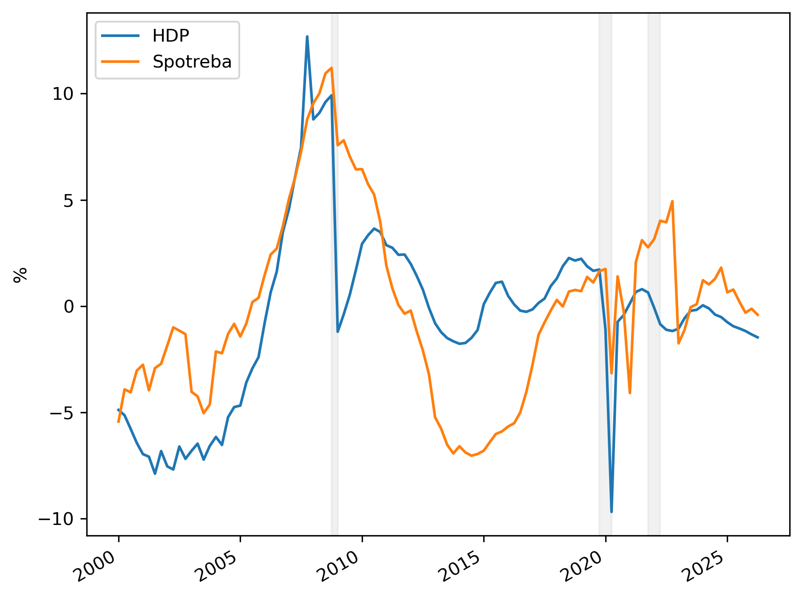
Obr. 13.14 Cyklická zložka HDP a spotreby#
Zdroj: vlastné spracovanie na základe údajov Eurostatu.
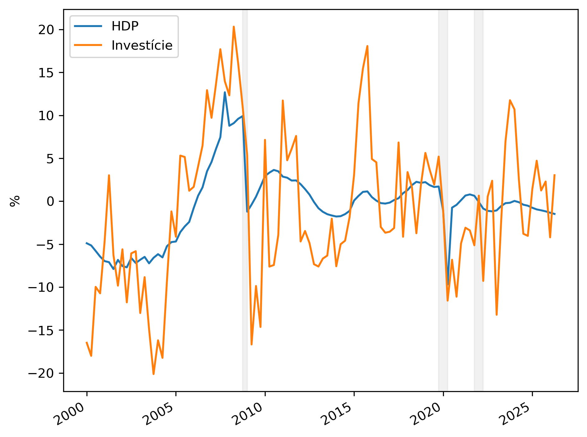
Obr. 13.15 Cyklická zložka HDP a investícií#
Zdroj: vlastné spracovanie na základe údajov Eurostatu.
Podľa Obr. 13.23 je spotreba v slovenskej ekonomike procyklická a jej volatilita je len mierne vyššia než volatilita HDP. Tento výsledok sa môže zdať prekvapivý, pretože v mnohých rozvinutých ekonomikách býva spotreba menej volatilná než HDP.
Slovenská ekonomika je však malá otvorená transformujúca sa ekonomika, ktorá v sledovanom období prešla viacerými významnými hospodárskymi udalosťami. Patria medzi ne vstup do Európskej únie, prijatie eura, globálna finančná kríza, pandémia COVID-19 a energetická kríza. Tieto udalosti mohli zvýšiť citlivosť spotreby domácností na hospodársky cyklus.
V časti Section 8.8 sme si predstavili koncept spotrebiteľského vyhladzovania a Friedmanovu hypotézu trvalého príjmu, podľa ktorej reakcia spotreby na zmenu príjmu závisí od toho, do akej miery domácnosti považujú túto zmenu za trvalú.
Zopakujme, že ak domácnosti vnímajú zmenu príjmu ako trvalú, hraničný sklon k spotrebe je blízky jednej. Naopak, ak je zmena príjmu iba dočasná, za predpokladu veľmi dlhého rozhodovacieho horizontu je hraničný sklon k spotrebe blízky nule. Ukázali sme tiež, že reakcia úspor je opačná. Pri trvalej zmene príjmu sa úspory menia len málo, zatiaľ čo pri dočasnej zmene príjmu absorbujú väčšinu zmeny.
Rovnakú logiku možno preniesť aj na hospodárske cykly. Hospodárske cykly môžu byť spôsobené šokmi (Šok), ktoré spôsobia výkyvy príjmu a ostatných premenných. Ak sú výkyvy príjmu vnímané prevažne ako trvalé, očakávame, že volatilita spotreby bude podobná volatilite príjmu. Ak sú výkyvy príjmu prevažne dočasné, domácnosti ich budú tlmiť prostredníctvom úspor a volatilita spotreby bude nižšia než volatilita príjmu.
Podľa hodnôt volatility cyklických zložiek spotreby a HDP (Obr. 13.23), by sme mohli usúdiť, že významná časť šokov je domácnosťami vnímaná ako dlhodobejšia. To je čiastočne pravda. Takýto záver podporujú aj Obr. 13.2 a Obr. 13.12, z ktorých vidíme, že jednotlivé recesie boli sprevádzané spomalením dlhodobého rastu ekonomiky.
Skutočne sa môžeme domnievať, že globálna finančná kríza, pandémia COVID-19, ale aj európska energetická kríza predstavujú šoky, ktoré majú dlhodobý dopad nielen na slovenskú ekonomiku, ale aj na ekonomiky vo svete či v Európe. Okrem toho Slovensko v období od roku 2000 pokračovalo v transformácii z centrálne plánovanej na trhovú ekonomiku, vstúpilo do EÚ a prijalo euro. Aj tieto udalosti možno interpretovať ako šoky s dlhodobými ekonomickými dôsledkami.
Ak je však spotreba podobne volatilná ako HDP, domácnosti spotrebiteľské vyhladzovanie využívajú len v obmedzenej miere. Podľa nášho jednoduchého modelu by v takom prípade mala väčšinu zmien príjmu absorbovať spotreba, zatiaľ čo úspory by mali reagovať relatívne málo. Z identity úspor a investícií (10.4) však vieme, že úspory financujú investície a bežný účet platobnej bilancie. Vysoká volatilita investícií preto s týmto obrazom úplne nekorešponduje.
Presnejší obraz získame po úprave časového radu spotreby. Súkromná spotreba zahŕňa spotrebu trvanlivých a netrvanlivých statkov. Z pohľadu domácnosti majú mnohé statky dlhodobej spotreby charakter investície alebo spôsobu uloženia úspor. Nákup automobilu, nábytku alebo rozsiahle vybavenie domácnosti preto svojím charakterom pripomína investičné rozhodnutie viac než bežnú spotrebu. Naopak, výdavky na potraviny alebo služby predstavujú typickú spotrebu, ktorú sa domácnosti usilujú vyhladiť v zmysle Friedmanovej hypotézy trvalého príjmu.
Na Obr. 13.16 je cyklická charakteristika spotreby trvalých statkov spolu s cyklickou charakteristikou HDP. Podľa tabuľky na Obr. 13.17 je spotreba trvalých statkov viac než dvojnásobne volatilnejšia ako HDP.Výdavky na trvanlivé statky teda reagujú na hospodársky cyklus podstatne výraznejšie než celková spotreba. Tento výsledok je konzistentný s možnosťou domácností presúvať nákupy trvanlivých statkov medzi jednotlivými obdobiami.
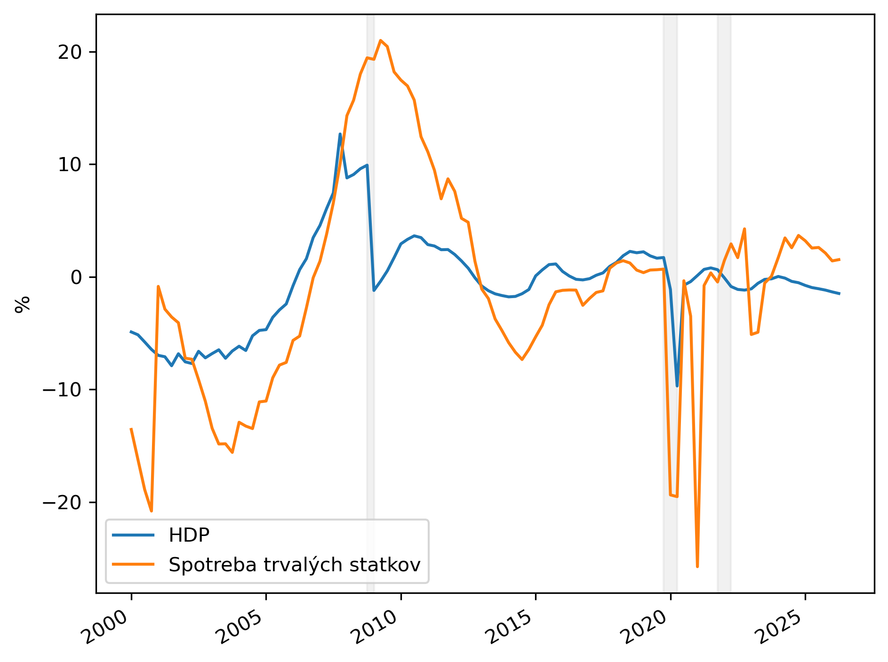
Obr. 13.16 Cyklická zložka HDP a spotreby trvalých statkov#
Zdroj: vlastné spracovanie na základe údajov Eurostatu.
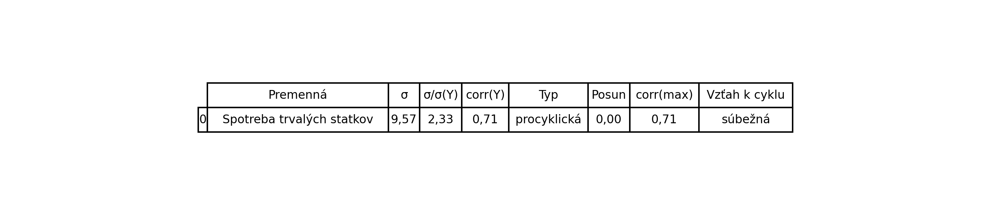
Obr. 13.17 Cyklická charakteristika spotreby trvalých statkov#
Zdroj: vlastné spracovanie na základe údajov Eurostatu.
Pozorované cyklické charakteristiky spotreby a investícií sú preto konzistentné s predstavou, že šoky v slovenskej ekonomike nie sú ani čisto dočasné, ani čisto trvalé. Možnú interpretáciu poskytuje koncept pretrvávajúcich šokov (Pretrvávajúce zmeny príjmu), ktorých účinky pretrvávajú aj v budúcich obdobiach.
Interpretáciu ešte komplikuje skutočnosť, že volatilitu spotreby a investícií ovplyvňuje nielen povaha šokov, ale aj fungovanie finančných trhov. Ak domácnosti alebo firmy čelia obmedzenému prístupu k úverom, ich schopnosť vyhladzovať spotrebu a investície sa znižuje. V dôsledku toho môže byť spotreba volatilnejšia, než predpovedá Friedmanova hypotéza trvalého príjmu.
Podobne aj investičné rozhodnutia ovplyvňujú náklady na prispôsobenie kapitálu. Ak je zmena kapitálovej zásoby spojená s vysokými nákladmi, firmy investície rozkladajú do viacerých období. Vyššie náklady na prispôsobenie preto znižujú volatilitu investícií. Naopak, pri nízkych nákladoch môžu firmy reagovať na ekonomické šoky prudšími zmenami investícií.
Globálna finančná kríza a recesia počas pandémie COVID-19
Porovnanie globálnej finančnej krízy a pandémie COVID-19 ukazuje, že hospodárske cykly nemusia mať rovnaký charakter. Kým počas finančnej krízy reagovali najvýraznejšie investície, počas pandémie COVID-19 bolo zasiahnuté predovšetkým správanie spotrebiteľov.
Tento rozdiel naznačuje, že volatilitu spotreby a investícií neurčuje iba povaha ekonomických šokov, ale aj fungovanie trhov a náklady spojené s prispôsobením.
13.14.2. Vládne nákupy, vývoz a dovoz#
Na Obr. 13.18 sú zobrazené cyklické zložky HDP a vládnych nákupov. Podľa výsledkov v tabuľke na Obr. 13.23 sú vládne nákupy v priemere procyklické. Takýto výsledok nie je pre rozvinuté ekonomiky nezvyčajný. Hoci sa od fiškálnej politiky často očakáva stabilizácia hospodárskeho cyklu, v praxi sa vládne výdavky často pohybujú rovnakým smerom ako ekonomická aktivita.
Pri detailnejšom pohľade na Obr. 13.18 však vidíme, že vzťah medzi vládnymi nákupmi a hospodárskym cyklom nebol počas celého obdobia rovnaký. Podľa grafu sa silnejšia procyklickosť vládnych nákupov objavuje najmä po roku 2015.
Výsledok naznačuje, že správanie verejného sektora sa v priebehu sledovaného obdobia menilo a že jednoduché označenie vládnych nákupov za procyklické alebo kontracyklické nemusí vystihovať celý príbeh.
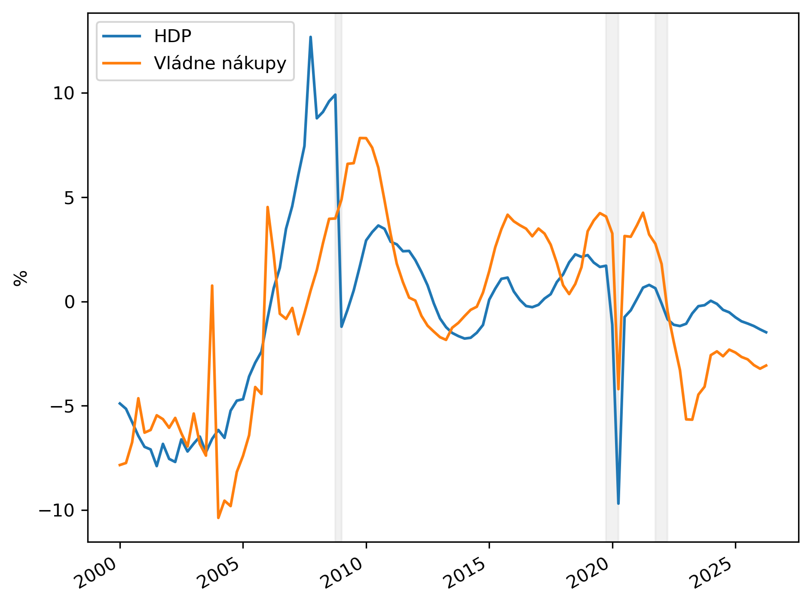
Obr. 13.18 Cyklická zložka HDP a vládnych nákupov#
Zdroj: vlastné spracovanie na základe údajov Eurostatu.
Vývoz a dovoz sú silno procyklické a ešte volatilnejšie ako investície. Tento výsledok odráža vysokú otvorenosť slovenskej ekonomiky. Počas hospodárskeho rastu rastie zahraničný dopyt po slovenskej produkcii, čo zvyšuje vývoz. Súčasne rastie dovoz vstupov potrebných na výrobu exportov, ale aj dovoz spotrebných a investičných tovarov. Počas recesií sa tento proces obracia a vývoz aj dovoz klesajú.
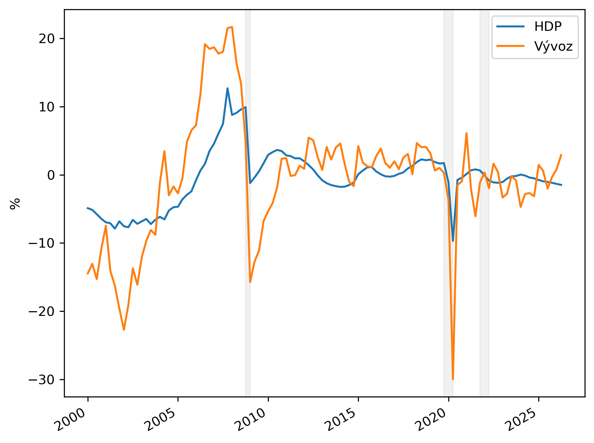
Obr. 13.19 Cyklická zložka HDP a vývozu#
Zdroj: vlastné spracovanie na základe údajov Eurostatu.
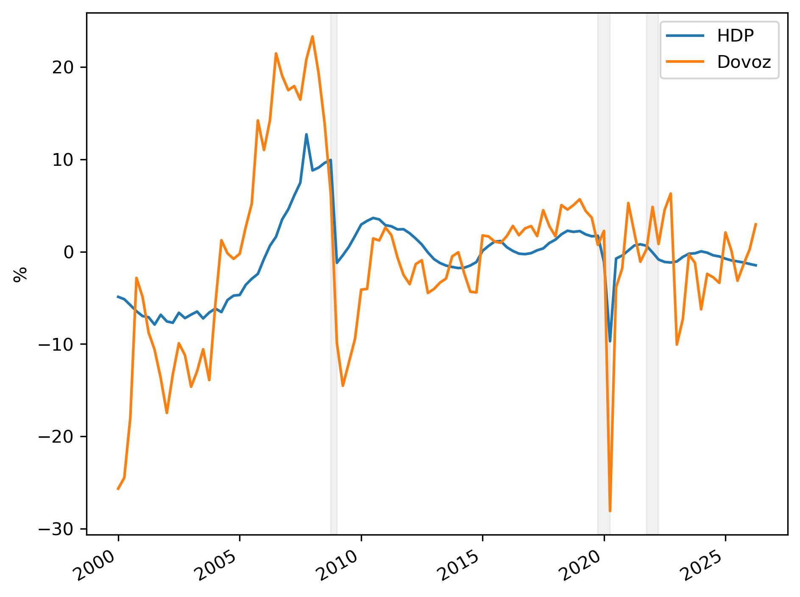
Obr. 13.20 Cyklická zložka HDP a dovozu#
Zdroj: vlastné spracovanie na základe údajov Eurostatu.
13.14.3. Všeobecná cenová hladina a miera inflácie#
Harmonizovaný index spotrebiteľských cien aj miera inflácie sú podľa slovenských údajov acyklické.
Na údajoch ekonomiky Veľkej Británie v rozpätí rokov od 1861 po 1957 britský ekonóm A.W. Phillips odhadol nepriamu závislosť medzi rastom miezd a mierou nezamestnanosti [Phi58]. Tento vzťah sa stal známym ako Phillipsova krivka. V modernej makroekonómii sa Phillipsova krivka zvyčajne interpretuje ako vzťah medzi mierou inflácie a ekonomickou aktivitou.
Intuitívne možno očakávať, že v období hospodárskeho rastu rastie dopyt po práci, klesá nezamestnanosť a rastú mzdy. Rast miezd predstavuje rast ceny výrobného faktora práca, ktorý sa môže premietnuť aj do rastu všeobecnej cenovej hladiny. Z tohto dôvodu mnohé makroekonomické modely predpokladajú kladnú súvislosť medzi ekonomickou aktivitou a infláciou.
V posledných desaťročiach však empirické údaje často ukazujú, že tento vzťah je slabší, než sa pôvodne predpokladalo. Slovenské údaje naznačujú, že cenová hladina aj miera inflácie sú skôr acyklické. Zdá sa teda, že hospodársky cyklus vysvetľuje len malú časť zmien inflácie.
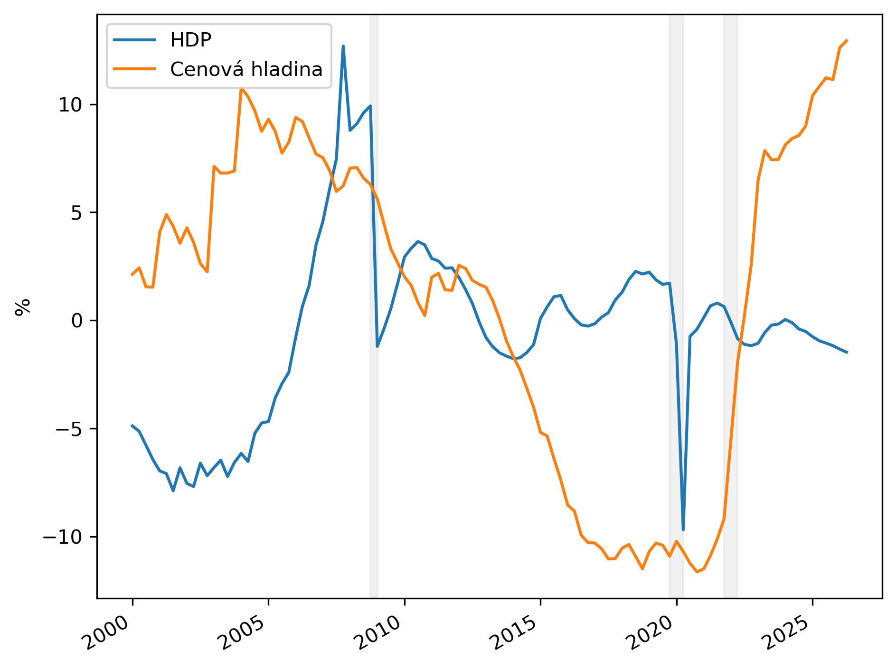
Obr. 13.21 Cyklická zložka HDP a HICP#
Zdroj: vlastné spracovanie na základe údajov Eurostatu.
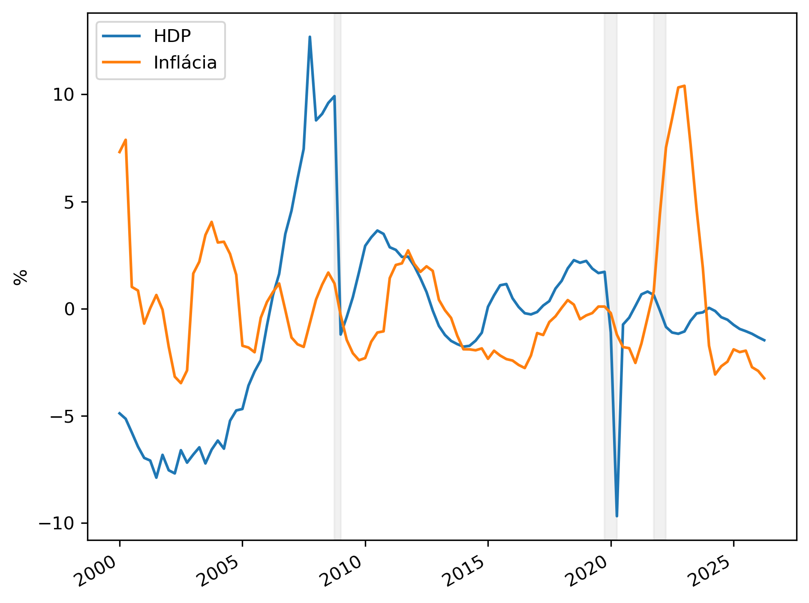
Obr. 13.22 Cyklická zložka HDP a miery inflácie.#
Zdroj: vlastné spracovanie na základe údajov Eurostatu.
Tabuľka na Obr. 13.23 sumarizuje cyklické charakteristiky vybraných časových radov v slovenskej ekonomike. Väčšina premenných je procyklická a súbežná s hospodárskym cyklom.
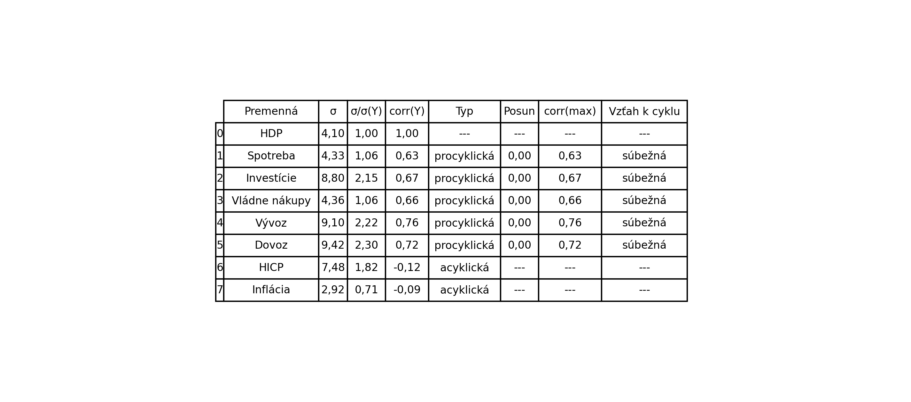
Obr. 13.23 Cyklické charakteristiky vybraných slovenských časových radov.#
Zdroj: vlastné spracovanie na základe údajov Eurostatu.
13.15. Štylizované fakty slovenskej ekonomiky#
Od roku 2000 možno v slovenskej ekonomike identifikovať tri významné recesie:
globálnu finančnú krízu (2008–2009),
pandémiu COVID-19 (2020),
energetickú krízu (2021–2022).
Slovenská ekonomika dlhodobo rastie, ale tempo rastu sa postupne znižuje. Spomaľovanie rastu pozorujeme pri porovnaní jednotlivých dekád aj období medzi recesiami.
Slovensko sa do roku 2010 výrazne približovalo priemernej ekonomickej výkonnosti Európskej únie, meranej HDP na obyvateľa v parite kúpnej sily. Po roku 2010 sa proces konvergencie výrazne spomalil.
Miera inflácie v slovenskej ekonomike sa po roku 2000 výrazne menila. Po globálnej finančnej kríze nasledovalo obdobie nízkej inflácie až deflácie. Naopak, po pandémii COVID-19 a najmä počas energetickej krízy inflácia výrazne vzrástla.
Súkromná spotreba je procyklická a súbežná s hospodárskym cyklom. Jej volatilita je približne rovnaká ako volatilita HDP.
Jednotlivé zložky súkromnej spotreby sa líšia svojou cyklickou volatilitou. Spotreba trvanlivých statkov je viac než dvojnásobne volatilnejšia než HDP a výrazne volatilnejšia než spotreba netrvanlivých statkov. Zároveň je silne procyklická a súbežná s hospodárskym cyklom.
Investície sú procyklické a súbežné s hospodárskym cyklom. Sú viac než dvojnásobne volatilnejšie než HDP.
Vládne nákupy sú v slovenskej ekonomike procyklické a súbežné s hospodárskym cyklom.
Vývoz a dovoz patria medzi najvolatilnejšie zložky ekonomiky. Obe premenné sú silne procyklické a súbežné s hospodárskym cyklom.
Cenová hladina a miera inflácie sú v slovenskej ekonomike prevažne acyklické.
Charakter hospodárskych recesií nie je rovnaký. Počas globálnej finančnej krízy reagovali najvýraznejšie investície, zatiaľ čo počas pandémie COVID-19 bol výraznejšie zasiahnutý spotrebiteľský dopyt.
13.16. Riešené príklady#
Inšpirácia
Mnohé z riešených a neriešných príkladov sú prevzaté a upravené z makroekonomických učebníc Stephena D. Williamsona Macroeconomics a Matthiasa Doepkeho, Andreasa Lehnerta a Andrewa Sellgrena [DLS00, Wil18].
13.16.1. Príklad: Jednoduché, zložené a spojité úrokovanie#
Predstavte si, že investujete 1 000 € do dvojročného dlhopisu s ročnou úrokovou mierou 5 %. Vypočítajte budúcu hodnotu investície pri:
jednoduchom úrokovaní,
zloženom úrokovaní s ročnou frekvenciou,
zloženom úrokovaní s dennou frekvenciou,
spojitom úrokovaní.
13.16.1.1. Jednoduché úrokovanie#
Pri jednoduchom úrokovaní platí
Po dosadení
získame
Budúca hodnota investície je \(\boxed{1\,100\text{ €}}\).
13.16.1.2. Zložené úrokovanie s ročnou frekvenciou#
Platí
Po dosadení
Budúca hodnota investície je \(\boxed{1\,102,50\text{ €}}\).
13.16.1.3. Zložené úrokovanie s dennou frekvenciou#
Predpokladajme 365 dní v roku. Potom
Platí
Po dosadení
Po výpočte
Budúca hodnota investície je \(\boxed{1\,105,16\text{ €}}\).
13.16.1.4. Spojité úrokovanie#
Pri spojitom úrokovaní platí $\( X_t=X_0 e^{rt}. \)$ Po dosadení
Budúca hodnota investície je \(\boxed{1\,105.17\text{ €}}\).
13.16.1.5. Porovnanie výsledkov#
Metóda |
Budúca hodnota (€) |
|---|---|
Jednoduché úrokovanie |
1 100,00 |
Zložené úrokovanie (ročne) |
1 102,50 |
Zložené úrokovanie (denne) |
1 105,16 |
Spojité úrokovanie |
1 105,17 |
Čím častejšie je úrok pripisovaný k istine, tým vyššia je budúca hodnota investície. Spojité úrokovanie predstavuje limitný prípad s nekonečným pripisovaním úroku k istine.
13.16.2. Príklad: Nominálny a reálny HDP, deflátory a reťazenie objemov#
Uvažujme o ekonomike, v ktorej sa vyrábajú iba jablká a hrušky. V prvom roku sa vyprodukovalo 50 kg jabĺk a 100 kg hrušiek. Trhové ceny jabĺk a hrušiek boli 1,00 €/kg, respektíve 0,80 €/kg. V druhom roku sa vyprodukovalo 80 kg jabĺk a 120 kg hrušiek za ceny 1,50 €/kg a 0,90 €/kg. Údaje sumarizuje Tab. 13.3.
Produkt |
Množstvo (rok 1) |
Cena (rok 1) |
Množstvo (rok 2) |
Cena (rok 2) |
|---|---|---|---|---|
Jablká |
50 kg |
1,00 €/kg |
80 kg |
1,50 €/kg |
Hrušky |
100 kg |
0,80 €/kg |
120 kg |
0,90 €/kg |
13.16.2.1. Zadanie#
Vypočítajte nominálny HDP v oboch rokoch.
Vypočítajte reálny HDP v cenách prvého roku, mieru rastu reálneho HDP a deflátor HDP.
Vypočítajte reálny HDP v cenách druhého roku, mieru rastu reálneho HDP a deflátor HDP.
Vypočítajte mieru rastu reálneho HDP reťazením objemov. Následne vypočítajte reálny HDP v oboch obdobiach pri použití prvého aj druhého bázického obdobia a príslušné deflátory.
13.16.2.2. Nominálny HDP#
Nominálny HDP v prvom roku je
Nominálny HDP v druhom roku je
13.16.2.3. Ceny v prvom roku#
Reálny HDP v cenách prvého roku je
Reálna miera rastu HDP
Hrubá miera rastu reálneho HDP je
Čistá miera rastu je
Reálny HDP vzrástol približne o \(35,38\%\).
Deflátor HDP
Nominálny HDP v druhom roku je
Deflátor HDP v druhom roku je
To znamená, že cenová hladina v druhom roku bola približne o \(29,55\%\) vyššia než v prvom roku.
Výsledky možno zhrnúť:
Ukazovateľ |
Rok 1 |
Rok 2 |
|---|---|---|
Nominálny HDP |
130 |
228 |
Reálny HDP (ceny roku 1) |
130 |
176 |
Deflátor HDP |
100 |
129,55 |
13.16.2.4. Ceny v druhom roku#
Teraz zvolíme za bázické obdobie druhý rok. Reálny HDP v druhom roku je preto zhodný s nominálnym HDP:
Reálny HDP v prvom roku vypočítaný v cenách druhého roku je
Hrubá miera rastu reálneho HDP je
Čistá miera rastu reálneho HDP je
Reálny HDP preto vzrástol o \(38,18\%\).
Deflátor HDP v druhom roku je podľa definície
Deflátor HDP v prvom roku je
To znamená, že cenová hladina v prvom roku predstavovala približne 78,8 % cenovej hladiny druhého roku.
Výsledky možno zhrnúť:
Ukazovateľ |
Rok 1 |
Rok 2 |
|---|---|---|
Nominálny HDP |
130 |
228 |
Reálny HDP (ceny roku 2) |
165 |
228 |
Deflátor HDP |
78,79 |
100 |
13.16.2.5. Reálny HDP vypočítaný reťazením objemov#
Pri výpočte reálneho HDP reťazením objemov používame geometrický priemer mier rastu vypočítaných pri použití prvého a druhého bázického obdobia:
Po dosadení
Čistá miera rastu reálneho HDP vypočítaná reťazením objemov je preto
Reálny HDP vzrástol o \(36,77\%\).
Ak za bázicky rok zvolíme prvý rok, reálny HDP v druhom roku bude
Ak za bázicky rok zvolíme druhý rok, reálny HDP v prvom roku bude
Deflátor HDP pri použití prvého roku ako referenčného je
Deflátor HDP pri použití druhého roku ako referenčného je
Výsledky možno zhrnúť:
Ukazovateľ |
Rok 1 |
Rok 2 |
|---|---|---|
Nominálny HDP |
130 |
228 |
Reálny HDP (reťazenie objemov) |
166,71 |
177,80 |
Deflátor HDP |
77,98 |
128,23 |
Všimnite si, že miera rastu vypočítaná reťazením objemov leží medzi mierou rastu vypočítanou v cenách prvého roku a mierou rastu vypočítanou v cenách druhého roku:
Práve odstránenie závislosti výsledku od voľby bázického obdobia je hlavným dôvodom, prečo moderné národné účty používajú reťazenie objemov.
13.16.3. Riešený príklad: Index spotrebiteľských cien#
Predpokladajme, že množstvá jabĺk a hrušiek v prvom roku predstavujú spotrebný kôš priemernej domácnosti.
Produkt |
Množstvo |
|---|---|
Jablká |
50 kg |
Hrušky |
100 kg |
Ceny v prvom roku sú:
jablká: 1,00 €/kg,
hrušky: 0,80 €/kg.
Ceny v druhom roku sú:
jablká: 1,50 €/kg,
hrušky: 0,90 €/kg.
Náklady na spotrebný kôš v prvom roku
Náklady na ten istý spotrebný kôš v druhom roku
Index spotrebiteľských cien
Index spotrebiteľských cien v druhom roku pri použití prvého roku ako bázického je
Miera inflácie
Hrubá miera inflácie je
Čistá miera inflácie je
Miera inflácie preto dosahuje
13.16.3.1. Výsledky#
Ukazovateľ |
Hodnota |
|---|---|
Náklady na spotrebný kôš v roku 1 |
130 |
Náklady na spotrebný kôš v roku 2 |
165 |
CPI |
126,92 |
Inflácia |
26,92 % |
Všimnite si
Pri výpočte CPI používame stále rovnaký spotrebný kôš. Pri výpočte reálneho HDP sme naopak porovnávali produkciu ekonomiky pri rôznych množstvách tovarov a služieb. Preto sa pri HDP používajú objemové indexy a reťazenie objemov, zatiaľ čo pri spotrebiteľských cenách sa vychádza zo spotrebného koša domácností.
13.17. Neriešené príklady#
13.17.1. Príklad: Úrokovanie#
Ročná úroková miera kreditnej karty je 14,2 %. Aká je denná úroková miera?
13.17.2. Príklad: Úrokovanie#
Úžerník pýta úrok 30 € za týždeň pôžičky v hodnote 1000 €. Aká je jeho ročná úroková miera? (predpokladajte, že rok má 52 týždňov).
13.17.3. Príklad: Úrokovanie#
Dnes ráno ste investovali 10 000 € do fondov s 5,7% ročnou úrokovou mierou. V ktorý deň bude hodnota investície aspoň 15 000 €? (Odpovedzte v počtoch dňoch od dnes. Úroky prichádzajú každý deň, ale úrokovanie je ročné.)
13.17.4. Príklad: Miera rastu#
Predpokladajte, že reálny HDP Európskej únie bude nasledujúce polstoročie rásť konštantnou ročnou spojito vyjadrenou mierou 1,5 %. Ako dlho bude trvať, kým sa reálny HDP zdvojnásobí?
13.17.5. Príklad: Miera rastu#
Predpokladajte, že každý rok sa vyrúbe 4,6 % zostávajúcej rozlohy lesov. Ako dlho bude trvať, kým sa vyrúbe polovica lesov?
13.17.6. Príklad: Miera rastu#
Počet obyvateľov sveta bol približne 679 mil. v roku 1 700 a 954 mil. v roku 1 800.
Aká bola spojito vyjadrená medziročná miera rastu obyvateľstva medzi rokmi 1 700 a 1 800?
Predpokladajte, že rovnako rýchlo rástla svetová populácia od čias Adama a Evy až po rok 1 800. Kedy asi boli Adam a Eva vyhnaní z Rajskej záhrady? (Pomôcka: koľko bolo vtedy obyvateľov sveta?)
13.17.7. Príklad: Miera rastu#
Podľa údajov zo Svetovej banky bol v roku 1984 reálny ročný príjem priemerného Američana 15 400 dolárov, kým reálny ročný príjem priemerného Japonca v tom istom roku bol 10 600 dolárov. V období medzi rokmi 1965 a 1984 rástol priemerný reálny ročný príjem obyvateľa ročnou (spojito vyjadrenou) mierou 1,7 % v USA a 4,7 % v Japonsku. Ak by tieto miery rastu zostali v ďalších rokoch po 1984 také isté ako v rokoch 1965 – 1984, v ktorom roku by mali priemerný Američan a Japonec rovnaký príjem? Aký veľký by bol?
13.17.8. Príklad: Nominálny a reálny HDP#
Predpokladajte, že suma dane z pridanej hodnoty odvedenej za r. 2020 v hypotetickom štáte bola 120 mld. toliarov. Sadzba dane z pridanej hodnoty bola 25 %.
Vypočítajte nominálny HDP v danom štáte za rok 2020 (pomôcka: sumu dane z pridanej hodnoty treba tiež pripočítať do HDP)
Za predpokladu konštantnej ročnej miery inflácie v štáte 6 % v období 2010 – 2020 vypočítajte reálny HDP v cenách roku 2012.
Nominálny HDP v roku 2012 bol 315 mld. toliarov. Ako vzrástol nominálny a ako reálny HDP?
O koľko percent vzrástla všeobecná cenová hladina v r. 2020 v porovnaní s rokom 2012? Aká je hodnota 1 toliara z roku 2012 v roku 2020?
13.17.9. Príklad: Nominálny a reálny HDP, cenové indexy a miera inflácie#
Ekonomika produkuje nábytok a automobily. V Tab. 13.9 sú uvedené množstvá produkcie a ceny za ktoré sa predávali v dvoch po sebe nasledujúcich rokoch.
Rok |
Nábytok (ks) |
Cena nábytku (€/ks) |
Automobily (ks) |
Cena automobilu (€/ks) |
|---|---|---|---|---|
1 |
500 |
1 000 |
100 |
10 000 |
2 |
800 |
1 250 |
120 |
16 000 |
Vypočítajte nominálny HDP v oboch obdobiach a jeho mieru rastu.
Vypočítajte reálny HDP v oboch obdobiach a jeho mieru rastu voľbou prvého aj druhého bázického obdobia.
Vypočítajte reálny HDP v oboch obdobiach reťazením objemov v cenách z prvého aj druhého roku. Vypočítajte mieru rastu reálneho HDP reťazením objemov.
K úloham 2. a 3. vypočítajte prislúchajúce deflátory
13.17.10. Príklad: Index spotrebiteľských cien#
Je daný nasledujúci spotrebný kôš a ceny jeho jednotlivých položiek v rokoch 2021 a 2020
Položka |
Množstvo |
Cena (rok 2020) |
Cena (rok 2021) |
|---|---|---|---|
Potraviny |
100 |
100 |
150 |
Bývanie |
150 |
150 |
200 |
Doprava |
25 |
300 |
325 |
Vypočítajte spotrebiteľský cenový index CPI tohto spotrebného koša v roku 2021 v cenách roku 2020.
Vypočítajte mieru inflácie za rok 2021 v porovnaní s rokom 2020.
13.18. Literatúra#
Marianne Baxter and Robert G. King. Measuring business cycles: approximate band-pass filters for economic time series. Review of Economics and Statistics, 81(4):575–593, 1999. URL: https://www.jstor.org/stable/2646708, doi:10.1162/003465399558454.
missing publisher in DLS2000
James D. Hamilton. Why you should never use the hodrick-prescott filter. Review of Economics and Statistics, 100(5):831–843, 2018. doi:10.1162/rest_a_00706.
Robert J. Hodrick and Edward C. Prescott. Postwar u.s. business cycles: an empirical investigation. Journal of Money, Credit and Banking, 29(1):1–16, 1997. doi:10.2307/2953682.
A. W. Phillips. The relation between unemployment and the rate of change of money wage rates in the united kingdom, 1861–1957. Economica, 25(100):283–299, 1958. doi:10.2307/2550759.
Martin Uribe and Stephanie Schmitt-Grohé. Open Economy Macroeconomics. Princeton University Press, 2017. ISBN 9780691158778.
Stephen D. Williamson. Macroeconomics. Pearson, 6 edition, 2018. ISBN 9780134472119.
European Commission. European System of Accounts 2010. Publications Office of the European Union, Luxembourg, 2013. ISBN 978-92-79-31242-7. URL: https://doi.org/10.2785/16644, doi:10.2785/16644.
Eurostat. Eurostat database. 2026. Prístup: 11. september 2026. URL: https://ec.europa.eu/eurostat/data/database.